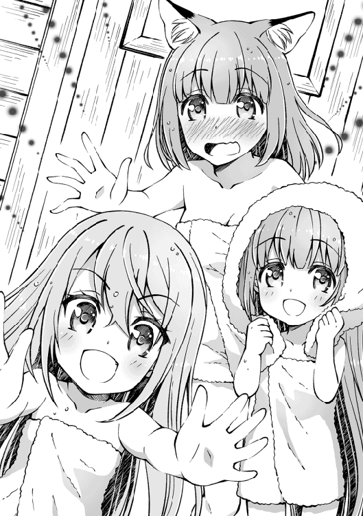

| レベル無限の契約者～神剣とスキルで世界最強～3 | |
| わたがし大五郎 | |
| TOブックス (2017) | |
旅を続けるグラッド達の前に、第3の悪魔、怠惰のベルフェゴールが襲来し、その能力により女性メンバーたちは皆幼児退行してしまう。戦力が大幅にダウンする中、そこへ助太刀に現れたのは、何と色欲のアスモデウス！ 彼女と大罪神剣の契約を結び、グラッドは二重契約による大いなる力を得て、ベルフェゴールへと立ち向かう。運命の名の下に、悪魔大戦はさらに熾烈を極めていくのだった。大人気世直しバトルファンタジー第３弾！
Illustration 秋咲りお
Design BEE-PEE
Prologue. 全ての始まり
約束の地カーナ。
竜神アリエスを守護竜として祟え、女神の血を引き継ぐ王家が統治している浮遊大陸。
そこは、光輝く雲海がどこまでも広がる神秘的な世界だった。
白鹿が駆け回り、翼を大きく広げた鳥が、青い空をゆっくりと横切っていく。
すぐ横には、さらさらと流れる小川がどこまでも続いている。
地上で、これほど美しい大陸はあるだろうか。
天上は常に陽射しが差し込み、大地には一切の魔物の気配がない。
ただ延々と緑の平原が広がるばかり。
たった一人──。
緑柱珠さながらに輝く緑髪をなびかせた、裸身の少女を除いては。
「......」
神秘的な少女だった。
宝石のように自然と輝く緑髪に、どんな炎よりも深く鮮やかな色身を帯びた紅珠眼。
そして、その一糸まとわぬ華奢な裸身もそう。
生まれたての赤子のようにきめ細かい肌ながら、まるで透けるような白磁色の肌。
華奢でありながら手足はすらりと伸びて、さらに年頃の少女らしい丸みも感じられる。
見た目の年齢は十六か十七。
けれどそんな外見など意味がないと言わんばかりに、少女の印象は圧倒的に神々しい。
「ここは......？」
吹きすさぶ風に舞う横髪を手で押さえる少女。
頭上を飛ぶ鳥の群れ。
どこまでも続く空の地平線。
自分の周囲をぼんやりと眺めていた彼女が、唐突に──。
「......くしゅん！」
可愛い声でくしゃみをした。
「......寒い。ここどこだろう？ なんでわたし、こんな場所に立っているの......？」
裸身を平原に晒したまま腕組みをする少女。落ち着いて考えようにも周囲の風鳴りがあまりに強く、そして冷たい風が肌の温度を奪っていく。
「来て、始原聖獣」
直後、火の鳥が現れた。
少女の全身から大気へ溶け込むように。
大鷲すらも赤子に見えるほどの巨大な翼で熱風を起こし、周囲の温度を一瞬で変えてしまった。
一方で、少女に驚いた素振りはない。
自分の一声で火の鳥が現れることなど当然という様子で前髪を手で梳きながら、何かに気づいたように背後を振り返って。
「......お目覚めですか、怠惰のベルフェゴール様」
黒き翼の天使が立っていた。
「わたし、断罪戦争から、どれくらい眠っていたの？」
「......三百年です」
それを聞いて、しばし天上を見上げたままの少女。
だが──。
「......もう戦いたくない......」
その愛らしげな顔が、なぜか怯えたように青くなっていく。
天使はにっこりと笑い、最後に。
「......先代魔王様がお待ちです。力を貸してくださいますよね？」
空に向かって呟いた。
Story1. ラミアと盗賊
月明かりの夜。
広葉樹の森に静寂が広がった。
時折、樫の葉が擦れる音が、やたらと大きく聞こえてくる。
俺とお姉さんは、息を潜めながら気配を探っていた。
「......あっ！」
お姉さんの狐耳が、ピクリ、と動いた。
彼女は妖狐族の出身。
その聴力は犬や狼を軽く凌駕するほど優れている。
──ガサッ。
前方に気配が生まれた。
「あそこか」
軽く舌打ちして、俺は腰の鞘から長剣を引き抜こうとした。
だが、そうする間もなく、お姉さんが鉄球を振り回したまま木々へ飛び移った。
闇夜を裂いて怒涛の勢いで襲いかかる。
「はぁああああっ！」
裂帛の気合と共に鉄球が振り落とされる。
轟、と豪快な音を立てて、闇夜に隠れていた者──盗賊を制圧した。
相変わらず超人的な運動能力だ。
「て、敵襲だ!!」
一人取り逃した盗賊がいたらしく、仲間を呼んでいる。
しかしその叫びも、すぐにかき消えた。
俺が闇の中を縫うように移動し、盗賊の顎に拳を放ったからである。
「ぐっ!?」
「やかましい。静かにしろ」
盗賊は息を詰まらせて、すっ飛んでいった。
「他にはいないようだな」
俺は大きく息を吐きだしてから、辺りを見渡した。
鬱蒼と生い茂る木々。
人気の少ない群狼の森。
茂みの奥には魔物たちの明瞭な殺気が渦巻いている。
早く安全地帯まで移動したい、が。
「見つからないですね......」
「そうだな......」
お姉さんの問いに、俺は眉間にしわを寄せ、汗で額に張り付いた髪をかき上げた。
全ての始まりは半日前に遡る。
†×†
俺の名はグラッド、身に覚えのない罪で竜の生贄として捧げられた元傭兵だ。
生きながら竜に丸呑みされた俺は、腹の中で伝説の悪魔──嫉妬を司る悪魔リヴァイアサン──の魂が込められた神剣に命を助けられ、お互いの境遇に共感し、この世界を生き抜くために契約を結んだ。
傭兵から神剣の契約者となった俺は、旅の途中でスライム娘のテレサ、ラミアのリリス、妖狐のお姉さんらと出会い、一緒に旅をするようになった。
元英雄がリヴを狙ってきたり、神竜が復活したり、先代魔王が刺客を送り込んできたりしているが、どうにか楽しくやれていると思う。
ただ一点だけ、普通と違う点を挙げるなら、
「グラッドさん、ジャイアントグリズリーを始末しておきましたよ」
お姉さんが化け物という点だろうか。
彼女は俺と同じくらいの年齢で、鉄球を武器に戦う元ギルドの受付嬢。
最初は普通よりもちょっとだけ腕っぷしのある女性だったが、俺たちと一緒に旅を続ける間に大罪神剣の恩恵を強く受けてしまい、今では最強の冒険者となった。
そんなお姉さんを引き連れて、俺たちは神聖樹を目指していた。
しかし、立ち塞がる魔物──フォレストウルフの群れ。
俺たちはそれぞれ武器を取り出し、死力を尽くして応戦した。
──お姉さんが鉄球で魔物の頭を叩き潰し。
──お姉さんが拳で魔法を跳ね返し。
──お姉さんが返り血の滴る淑女となった。
お姉さんの活躍で手に入れた勝利。
その勝利の裏で、悲しい犠牲を払うことになるとは、予想もしていなかったのである。
†×†
「......まさか、リリスが誘拐されるとは......」
フォレストウルフとの戦いが終わってすぐ、遠巻きに盗賊たちの姿が見えた。
そして、馬車へ引き返すと──。
荷台で待機していたはずのリリスが消えていることに気づいたのである。
リリスは寂しがり屋なので、一人でどこかへ行くとは考えられない。
そこで、盗賊たちがやたらデカい麻袋を担いでいたことを思い出した。
......盗賊に捕まった？
なにせ、リリスは美女しか産まれないラミア族の出身だ。
ラミアは一途で優しく、知能が足りない所が可愛いと一部で囁かれている。
しかも、ラミアは希少種族なので個体数も少ない。
それがたたり、奴隷市場では超高額の商品として取引が行われているそうだ。
盗賊に目を付けられるのも無理がはなかった。
「リヴさんとテレサさんは、反対側の森を捜索していらっしゃるんですよね？」
「ああ、手がかりを見つけたら派手に暴れるって言ってたな」
盗賊がいたということは、こちら側が正解なのだろう。
さっそく俺たちは、リリスの痕跡を捜すことにした。
「ん？」
「どうしたんです？」
「これは......」
先程、盗賊が現れた場所。
そこには草木をかき分けるように獣道が走っている。
間違いない──リリスが引きずられた跡だ。
「行ってみよう」
「はいっ」
俺たちは獣道を歩き出した。
かなりハイペースな歩みだったが、じきに森を抜ける。
そこは廃墟だった。
倉庫や食糧庫と思わせる建物がいくつも建ち並んでいた。
よくよく観察してみると、古びたトロッコや埃塗れの樽などが置かれている。
線路が廃鉱に繋がっているのを見る限り、かつては鉱山として使われていたようだ。
倉庫の傍では三人の盗賊が焚火を囲み、酒をあおりながら意味もなく笑い声を上げていた。
見張りなのだろう。
その奥にある廃鉱こそが、盗賊の本拠地と見た。
「強行突破しますか？」
「いや、あまり騒ぎすぎるとリリスを危険に晒してしまうからな」
リリスは戦闘が苦手だ。
弓の使い方は教えてあるが、腕は素人並みである。
これでは逆上した盗賊たちに怪我を負わされる可能性が高いのだ。
まずは見張りを片付けてから廃鉱へ侵入するのがベストだろう。
「......つまり、注意を引きつければいいわけですね？」
「策があるのか？」
「はい。私の身が危険ではあるのですけど」
「......そうか」
お姉さんの肩に片手を置きながら、俺は曖昧に返事をした。
彼女の実力なら、盗賊如きで身の危険を感じることはないだろう。
「......頼めるか？」
「はいっ」
お姉さんは小さく頷き、鉄球を地面に置いた。
着ている衣服を少しだけ乱すと、すぅ、と大きく息を吸い込んで。
「助けてください！」
全力疾走。
さらに、焚火を囲む盗賊たちの目の前で派手に転んでみせる。
完璧な演技だ。
「お願い、します......助け、て......！」
激しく息を切らしたお姉さんの演技に、盗賊たちは目を丸くした。
「お。おい！ いったい何があったんだ!?」
突然の出来事に戸惑う盗賊たち。
「悪魔が現れたんです！ 悪魔が、私の旦那様と、子供を連れさらって......うぅ......」
息を呑むほどの演技力。
「このままでは、みんな殺されてしまいます！」
途切れながらの言葉は、まさに劇団の女優のようであった。
「──まな板悪魔の手で！」
うん、この場にリヴがいなくて心から良かったと思う。
盗賊たちは顔を見合わせると、一人が言った。
「よし、オレが見回りをしてくる！」
上目遣いのお姉さんの美貌にやられたのだろう。
格好いい姿を見せようと、俺の隠れる茂みの方へと歩いてくる。
お姉さんは泣き真似をしつつ、こっそりと俺にウィンクを送ってきた。
早い話、見つからないように盗賊を倒せってことか？
ご期待に応えようじゃないか。
俺は潜伏し、盗賊が目の前を通った瞬間にその首へ手刀を振り落とす。
「あがっ!?」
盗賊は呻き声を上げて、失神した。残るは二人。
「どうした？ 何があった！」
今の呻き声を聞きつけて、さらにもう一人が近づいてくる。
その瞬間──。
「すみません、実は噓泣きでした」
「へっ？」
がしっ。
お姉さんは盗賊の頭を両手で掴み、微笑んだ。
「えいっ」
バキィ、ごしゃり。
盗賊の頭から、絶対に聞こえてはいけない音がした。
儚い命がまた一つ、散ってしまった。
「貴様、何を──!?」
「悪いが、話をしている暇はないぜ」
「がはぁっ!?」
背中を向けた盗賊へ奇襲をかけて、地面に張り倒す。
制圧完了だ。
「クソッ、仲間がいたのか......あ」
悪態を吐く盗賊は、お姉さんの尻尾を見つめて、顔面を蒼く染めていく。
「その九尾、ま、まさか......」
盗賊は怯えていた。様子がおかしい。
「まさか、お前......」
歯をカチカチと鳴らしている。尋常じゃない怖がり方だ。
何が盗賊をここまで怯えさせるのだろうか。
その時だった。
「お前が──《剛腕の受付嬢》なのか......!?」
ピシリ。
お姉さんが石像のように固まった。
引きつった笑みを浮かべたまま、耳と尻尾が震えている。
まずい、お姉さんは腕力こそ凄いけど、性格は普通の女性なんだ。
精神面はそれほど強くない......！
「ケッ、こんな怪力女、一生結婚ができないだろうな」
「おい！」
こいつから情報を聞き出そうとしていたが、予定変更。
拳を腹へ叩き込み、盗賊を気絶させる。
これで戦いは終わったが......俺は恐る恐る、背後を振り返った。
「......すん、ぐすん」
お姉さんが泣いていた。
「グラッドさん......私、馬鹿力じゃないですよね......？ 違いますよね......？」
「お、落ち着け......」
涙で顔をぐしゃぐしゃにして、ジリジリと近づいてくる。
そして、その両腕を大きく開いて。
「結婚できますよね!? きっと、旦那様が現れますよね？ うわあああああんっ！」
俺に抱きつき、力一杯抱きしめるお姉さん。
バキリ。
「──────────────────!?」
人間、痛みを超越すると悲鳴を上げられないらしい。
それを悟った俺は、必死に治癒魔法を念じながら、お姉さんを慰めることとなった。
死ぬかと思った。
†×†
廃鉱を進んでいく。
薄暗い通路だった。
淀んだ空気の満ちる通路の壁にかけられた燭台の炎が、僅かな明かりを投げかけている。
奥の方からは、複数の人間がぼそぼそと話し合う声が聞こえてきた。
おそらく、不寝番の盗賊たちだろう。
俺は辺りに見張りの姿がないのを確認すると、足早に通路を進み、奥まったところにあるドアの前に立った。
そっと耳を押し当て、中の様子を伺う。
「......リリスさんの声がしませんか？」
俺を真似て耳を押しつけていたお姉さんが、眉をひそめて呟いた。
俺には何も聞こえないが、お姉さんが聞こえたなら中にリリスがいるのだろう。
「......ここが最深部ということは、中にいるのは盗賊の親分かもしれませんね」
きっと、その予想は当たっているだろう。
俺はノブをそっと回して部屋に忍び込む。
奥に、でん！ と置かれていたベッドでは、暢気に大男が寝ていた。
その近くの床には、両手と尻尾を紐で縛られたリリスの姿があった。
「むぐ〜っ!?」
「静かにな」
俺たちの姿を見て安堵したリリスの耳元で、俺は囁いた。
「......あまり騒ぐと、こいつが起きるぞ」
「！」
リリスがびくっと首をすくめ、すぐにその全身から力が抜けた。
冷たい床だ。
リリスはこんな場所に転がされていたのか......。
「はい、ロープを解きましたよ」
お姉さんがロープを引きちぎり、噛まされていた布を外してやった。
「う......」
涙に濡れたリリスの頬に、新たな涙が伝っていく。
何度も大声で泣き叫びたかったのだろう。
けれど、それをしなかったのがリリスの最後の抵抗だったのかもしれない。
「......怖、がった」
リリスは唇を噛み締め、声を押し殺して泣いた。
盗賊に連れ去られたこともショックだったのだろうが、自分が俺たちの足を引っ張っているんじゃないかと考えているのかもしれない。
まったく気にしなくていいことだが、奴隷として育てられてきたリリスは、自分に自信を持っていないので、そう考えてしまうのだろう。
「よし、まずはここから脱出するか」
「そうですね」
リリスを抱き抱えて部屋を出た俺は、ふと、リリスの胸の辺りを見やった。
「ど、どうしたの？」
涙目で、ぽーっと見上げてくるリリスに、俺は視線を逸らしながら言った。
「いや、何もされてないよな......と思って」
「も、もちろんだよ!?」
「ということを言いたかったわけじゃない。帰ったら食べたいものはあるか？」
「え」
「今日のことはすぐに忘れられないと思うけど、元気を出して欲しいからさ」
「グラッドくん......くすっ、ありがと！」
リリスは気が抜けたように笑ってくれた。
もしかしたらリリスは、俺が気を和らげるためにそんな話をしたのを見透かしているのかも。
「......止まってください。誰かが近づいてきます」
お姉さんが呟いて、すぐのことだった。
「逃がすな！ まだ遠くへは行ってないはずだ！ 探し出して殺せっ！」
「「「 はっ！ 」」」
怒りの声で、盗賊たちが散っていく物音が聞こえてきた。
「急いで脱出しましょう」
お姉さんに賛成し、俺は急ごうとした。が、
「......っ」
リリスの様子がおかしい。なるべく静かに走っているのだが、口から漏れる息づかいが荒くなっている。まるで、何かを我慢しているかのようで。
「......まさか」
俺は立ち止まり、リリスを床に降ろした。真っ青になるほど唇を噛んで苦悶しているリリスを見下ろして、服を無造作にずり上げた。
「わわ、何を──!!」
「これは......」
脇腹が、青く腫れていた。
「リリス、どうして黙っていたんだ？ 痛いなら隠す必要なんてないんだぞ？」
俺は怒っていたのかもしれない。
リリスの怪我に気づけなかった自分自身に。
「かなり内出血しているな......捕まった時に蹴られたのか？」
「うん......」
「血は吐いたか？」
「ううん、大丈夫......」
「折れてはいない、か......」
「せめてもの幸いですね。ご無事でよかったです......」
お姉さんは荷物から水筒を取り出し、ハンカチに染み込ませてリリスの脇腹へと当てる。
そこで、リリスは立ち上がろうとした。
「足手まといとか、そういうの......わたし、なりたくない、から──」
やはり気にしていたのか。
「あのなぁ」
俺はリリスの頬を引っ張った。
「い、いひゃい......」
「リリスが足手まといなら助けに行かない。俺たちがそうしないのは、リリスが切り捨てられない仲間だからだ」
「グラッドくん......」
「同じように深い手傷を負って俺が満足に走れなくなったら、リリスは俺を足手まといとして切り捨てるのか？」
「そ、そんなことしないよっ！」
壁に手を当てて呼吸を整えながら、リリスは俺を見つめてきた。
「それなら、自分を足手まといだなんて卑下しないでくれ」
俺は唇を歪めた。
昔、約束したんだ。彼女たちを守ると、約束した。
「ごめんね......」
「構わんさ。まずは生きて帰ろうぜ」
満面の笑みを浮かべて、俺はリリスに治癒魔法を施した。後は逃げ出すだけだが。
「へっへっへっ......見つけたぜ」
見つかってしまった。
「命が惜しけりゃ、とっとと武器を捨てるんだなぁ！」
盗賊の親分らしき大男と、部下っぽい連中が立ち塞がる。
......こいつのせいでリリスは......。
「......リリスをさらいやがって。王都や都市で盗賊をするほどの根性がないのなら、大人しく真っ当に働いてりゃいいだろうが」
「そうですね。無抵抗な女性をさらうとか最低の行為ですよ」
俺の怒りに、お姉さんも頷いた。
「うるせえっ！」
興奮する盗賊。
「人外をどうしようが、人間の勝手だろうが！」
この世界には人間以外の種族──人外が暮らしている。
人外とは、人間に分類されながらも動物のような見た目を持つものたちのことだ。
特徴としては、人間に比べて地位が弱く、世界中で迫害されている傾向が強い。
むろん、それらを正そうという動きも始まっている。
──と、一応断わっておくが、俺、グラッドは人外への差別はしていない。
幼い頃から理不尽な要求に従ってきた反動かもしれないが、人外が苦しんでいる姿を見るのは胸が痛いし、むしろ助けに入ってしまうほどだ。
ともあれ、人外をさらうような連中への慈悲はない。
大概は気絶させて役所へ突き出すのが通例だが、こいつ等にはリリスが世話になった。
俺なりの制裁を与えてやろう。
「降伏すれば命は助けてやるぞ？ 下手に出てやりゃあいい気になりやがって！」
いつ下手に出たんだ？ いつ。
「こうなりゃ力ずくだ！ お前ら、出てこい！」
親分の合図で、背後からぞろぞろと現れる盗賊たち。
短剣だけではなく、弓矢を用意している盗賊もいるようだった。
まだこんなに残っているのか。
「こっちだ！」
「ラミアもいるぞ！ 逃がすな！」
叫ぶ声と一緒に、矢羽が風を切る音が断続的に走った。
「やれやれ......リリス、捕まっていろよ」
「うん......！」
リリスを抱き抱え、大きく踏み込み、物陰へ移動した。
数秒の浮遊感のあと、リリスをそっと降ろした。
「全員、あいつらを殺せ！」
「「「 うおおおおお！ 」」」
短剣を持った盗賊たちが一斉に斬りかかってきた。
「数だけは多いが──」
燭台の炎に彩られた視界へ、鈍色の一閃を放つ。
俺の抜剣した一撃に、血飛沫を上げて盗賊がまとめて吹っ飛んでいく。
少し離れた位置で、お姉さんも戦っていた。
一気に殲滅する。
五人、六人──盗賊を蹴散らしたその時だった。
入口の方から、新たな影が近づいてきた。
「間に合ったようね！」
桜色の髪をなびかせて、魔術師の外套を左肩に纏っている少女はリヴだ。
彼女こそが嫉妬の悪魔。
今は大罪神剣に魂を封じ込められているので力の大半を失っているが、それでも桁違いの魔力から繰り出される魔法は、まさに最強であった。
「ご主人さま、お待たせしましたです！」
丁寧な口調で告げたのは、柔らかな空色の髪が印象的なスライムの少女だった。
海よりも深い瞳に、妖精のように儚くも愛らしい面立ち。
旅用のドレスに身を包んだ華奢な肢体も、可憐というほか表現のしようがない。
「この辺りから悲鳴が聞こえてたから、急いで駆けつけたのっ！ あなたたち、よくもリリスを誘拐してくれたわね！ もう許さないんだからっ！」
怒りに染まるリヴは、両手を突き出して魔法を構築した。
その両手が燃えるような赤に染まっていく。
「覚悟なさい！ エクスプロージョン！」
リヴのそんな呟きが聞こえた直後、轟、と俺の視界を灼熱の炎が埋め尽くした。
エクスプロージョン──火属極限魔法だ。
この魔法は大爆発を引き起こし、大範囲を一撃で制圧する威力を持っている。
そんな魔法をこの狭い通路で使ったらどうなるだろうか？
「まずいっ!?」
俺は剣を鞘に納め、超速度でリリスを抱き抱えた。
「全員、外へ逃げろっ！」
お姉さんとテレサも気づいたらしい。
リヴの首根を強引に掴み上げて、全員で出口へと全力疾走。
刹那、たった今まで俺たちが立っていた場所から、大爆発が発生する。
リヴの魔法が廃鉱を崩落させているのだ。
盗賊たちが巻き込まれ、吹き飛び、天井が崩れていく。
「ああもうっ！ なんでこうなるんだよ！」
泣き言じみた声を上げながら、俺は廃鉱を走り抜けた。
かくして。
廃鉱は崩壊し、盗賊たちは生き埋めになった。
Story2. 怠惰のベルフェゴール
俺たちの影が、月明かりに霞んでいく。
静かに照らされる木々も、皆同じ色に染まり、時々、寝ぼすけなフクロウの声が群狼の森を吹き抜ける。
昼には耳障りなフクロウの声も、不思議とこの時間には柔らかい。
そんな、真夜中の森で。
「リヴ、少しは反省したか？」
「い、いひゃいって！ ごめん、あたしが悪かったから頬を引っ張らにゃいで！」
俺たちは呼吸を整えながら、馬車へ向かっていた。
あの後、廃鉱の爆発によって周囲の家屋まですっかり吹き飛び、廃墟は瓦礫の山へ姿を変えた。
結局、いつものようにリヴの活躍で解決したが、「あたしって凄いでしょうー？」と自分を過大評価していたので、お仕置きとして頬を引っ張っていたのである。
「ううう、リリスが誘拐されて、頭に血が上っちゃったのよぅ......」
呟いて、よろよろと月明かりの道を歩く。
外見がおおよそ十二の少女とは思えない、疲弊しきった足取りだった。
リヴたちがリリスを詮索していた森は、ここから離れている。
でも、駆けつけてくれた。
俺とお姉さんが盗賊に遭遇したと知って、全速力で駆け付けてくれたのだろう。
「ありがとうな」
「ううん、気にしないでいいのよ」
リヴは、えへっ、と笑みを浮かべていた。
「リリスさま、お身体の汚れは拭き取れましたですっ！」
「テレサちゃん、助かったよ！」
「いえいえ！ 綺麗な尻尾ですよね」
俺たちの隣では、身体中の汚れを拭き取るリリスとテレサの姿があった。
リリスは長い金髪を指で梳かしながら、ほっ、と安堵の吐息を漏らしている。
治癒魔法で怪我もすっかり治ったようで、もう心配はないだろう。
無事でよかった。
（......今が楽しい、か）
ふと、思う。
傭兵時代の過去は、殆ど思い出したくない。
人を殺め、あの人を失って、がむしゃらに剣を振ってきた日々だからだ。
だから、俺がこうして笑いながら旅をするなんて、昔は想像もつかなかった。
（──リヴのおかげだな）
まがりなりにも、俺を契約者として選んでくれた。
単なるなりゆきとも言えるけど、それだけじゃないと、俺は思う。
多分、惹かれ合ったのだ。
お互いの境遇があまりにも似ていたから。
文句はあっても、ひどい目に遭っても、リヴと一緒にいられることが心地よかった。
だけど、それだけでいいのか考える。
リヴを守りたいなら、どうあるべきなのだろう。
（あの人ならどう言うんだろうな）
当然のように人の上に立つ、秘剣の猛犬と呼ばれた高慢なお嬢様傭兵。
自分の信念を貫く彼女なら、どんな風に答えるだろう。
──あるいは。
（お姉さんなら、どんな風に......）
「グラッドさん、怖かったですね！」
お姉さんが背中から抱き着いてくる。
──ぎゅっ。
また、全身に激痛が走った。
「あわがぎゃばぐらびゃああああああっ!?」
陸に上げられた魚のようにのたうち回って、ようやくお姉さんの無自覚な抱擁から解放されると、俺はよろよろと立ち上がった。
し、死ぬっ......殺される......。
一番の敵はお姉さんなのかもしれない。
「......えっと」
「どうされました、リリスさん？」
きょとんとお姉さんが首を傾げた。
「みんなに、お礼を言わないとね」
肩をすくめて、リリスは曖昧に笑った。
「......助けてくれて、ありがとうございました」
「あら、お礼なんていいのよ」
すんと鼻を鳴らして、リヴが告げる。
「で、でも......」
リリスがひどく驚いたように息を呑んだ。
「当たり前のことでしょう？ それとも、リリスは恩を押し付けられた方が良かったかしら？」
「あ、あ、ううん、そんなことはないけれど」
真っ白な手を振るリリスに、リヴが微笑した。
すっと手を伸ばす。
リリスの長い髪を撫でて──そのまま、抱き寄せた。
「よしよし、もう大丈夫だからね。リリスはいい子だからね。あとは任せてね！」
「「「 ............ 」」」
俺も、テレサも、お姉さんも凍りついた。
いや、少なくともリリス以外の俺たちにとっては、時間が止まったと言っていい。
リヴに、あんな包容力があったんだなぁ......まるで母親みたいだ。
「みんな」
愛しげにリリスは俺たちを順番に見て、こう囁いた。
「これからも、よろしくね......！」
†×†
「さて──と......」
身体を引きずるようにして、馬車まで戻ってきた。
少し前に立ち寄った温泉街で、特上の水羊羹を買ってあったと思う。
宿を旅立つ直前に買った、自分へのご褒美のつもりだった。
旅を続ける前に、これをみんなで食べるぐらいは許されるだろう。
さっそく荷台から取り出して、テレサの氷魔法で冷やして食べよう。
そう思ったのだが、急に足が止まった。
「──え？」
きょとんとして、声が漏れた。
俺たちの幌馬車は、五人で旅をするには充分なほど荷台が大きくなっている。
大型の人外であるラミア──リリスが寛げるようになっているからだ。
荷物や布団が綺麗にまとめられたその荷台に。
女性がうずくまっていた。
「────っ！」
だけど、俺が絶句したのはそのためではなかった。
女性の様子は、あまりにも不自然だった。
天使族かと思われる十六歳ほどのその顔立ちではなく、吸い込まれそうなその緑柱珠の長髪でもなく、馬車の荷台でうずくまっていることでさえなく、彼女のその全体のありざまが何か危うかった。
──たとえば、どうしようもなく白い肌。
──たとえば、ぴくりとも動かない胸元と指先。
──たとえば、半分だけ閉じられた、虚ろな瞳。
つう、と俺の頬を冷や汗が伝う。
血液という血液が凍結し、逆流した。
「まさか......」
ごくり、と唾を呑む。
どうしようもない予感に心臓を掴まれながら、ゆるりゆるりと近づいていく。
足裏から胃袋にかけて、嫌なものが流れ込んでいく感覚。
なんでこんなに、と思った。
だって、それは、
その女性が、あまりにも、生きていなくて。
「死ん、で......？」
そう、女性が死んでいるのかと......。
「............？」
女性の顔が、ぎこちなく持ち上がった。
「────っ!?」
飛び跳ねた俺が、その勢いで荷台から落下する。
頭に激しい衝撃を受けながら、俺は地面を転がった。
「ど、どうしたの？」
「......びっくりした」
心配そうに覗き込んでくるリヴの手を借りて、立ち上がる。
その前で、荷台の女性は白い首を傾げていた。
「大丈夫？」
女性は微笑んだ。
静かで、柔らかな声音。
そのゆったりした喋り方は独特で、軽装にも満たないパーカー姿だった。
潤みがちな瞳は半分閉じられており、今にも寝てしまいそうな女性である。
背中には荘厳なる弓と矢筒を背負っており、どこか神秘的な魅力を感じてしまう。
俺も様々な種族と出会ってきたが、だとしてもこれほど整った──なんというか、美しい人形のような相手を見るのは初めてだった。
「な......」
いったい誰だろう。
一度、声をかけようとして。
「久しぶりだね、リーちゃん」
と、答えが返ってきた。
「......怠惰のベルフェゴール!?」
敵だったらどうしようかと思ったが、やはり敵だった。
俺は長剣を引き抜いて、ベルフェゴールを討てる範囲で構えた。
「身構えなくても大丈夫だよ。今は、戦うつもりはないから」
その言葉の真意は分からないが、こんなにも隙がない女性を見たことがない。
少なくとも一流の騎士ですら、もっと空気が穏やかだ。
「こうしてお話するのは三百年ぶりだね。昔は仲良くやっていたはずだけど、リーちゃんはどうして悪魔を裏切ったの？」
──怠惰のベルフェゴール。
三百年前の断罪戦争で、大罪神剣に封印された大罪を司る悪魔の一柱。
リヴと同じ階級の悪魔ということから、その魔力は格が違うことが安易に想像つく。
まずい、と思った。
本当に戦うつもりがないのかは不明だが、こんなところで戦ってはみんなを巻き込んでしまう。かといって、大人しく剣をしまうわけにもいかない。
困ったので、そのままベルフェゴールへ視線を向け続けた。
ベルフェゴールは何も言わずに、ずっと俺とリヴを交互に見つめていた。
「先代魔王なんかに、手を貸せるはずがないでしょう？ ベルフェゴールもあいつが即位することに反対していたじゃない！」
「そうだったね。でも、先代魔王様に忠誠を誓わなきゃいけない理由があるんだよ？」
「待ってくれ」
「？」
軽く舌打ちしてから、俺は言った。
「ベアトリクスを倒してから、まだ四日しか経ってないはずだ。その時、他の大罪神剣は復活していないと聞いた。それなら、どうしてベルフェゴールは復活しているんだ？」
四日前。
俺たちは氷雪遺跡で、先代魔王の腹心との死闘に巻き込まれ、危うくテレサを失いかけたが、どうにか勝利を掴むことができた。
その時、俺たちに力を貸してくれた色欲の大罪──アスモデウスが教えてくれたのだ。
『──先代魔王は、他の大罪神剣の復活を急ぐかもしれませんわ』
あの言葉の通りになってしまった。
「さあ。先代魔王様の事情は詳しく知らないけど、私が目覚めたのは三日前だよ。黒い翼の天使が浮遊大陸に封印されていた私を解き放ってくれたから」
にへら、とベルフェゴールは頷いた。
「でも」
ベルフェゴールは寂しそうに呟いた。
「──本音を言うとね、私は戦いたくないかな？」
「......え？」
それまでの人形のような態度から一変。
本気で悲しそうに呟いてきた。
「断罪戦争の再現って言うけれど、要するに喧嘩に負けたことを認められない先代魔王様の復讐だよね？ 冷静に考えたら、断罪戦争は悪魔が敗北して終わったはずだよ。人間も、人外も、悪魔も、多くの犠牲を支払った。それなのに、三百年も経ってから蒸し返すなんて馬鹿らしいよ」
返す言葉がない。
ベルフェゴールの言う通りだった。
今を生きる人々にとって、まったく無縁の過去。
それどころか、悪魔という種族も殆どが姿を消した世界なのだ。
「ベルフェゴール......あなた、もしかして......」
フクロウの声が遠い。
どこかでバサバサと、鳥が飛び立つ音が聞こえた。
微かに、甘い香り──果物だろうか、優しい匂いがする。
きゅううう......と、可愛い音が鳴った。
お腹の音だった。
「あ」
俺かと思ったが、発生源は正面であった。
うつむくでもなく、恥ずかしがるでもなく、不動で俺たちを見つめている。
「腹......減っているのか？」
「............」
馬車の荷台に乗っている林檎を、じーっと見つめていた。
「......食べるか？」
「ちょっと、グラッド!?」
ベルフェゴールは黙ったまま、ものすごく驚いた顔をした。
その顔のまま、小さく頷いて、荷台から降りてくる。
「......あ！」
こてん。
今度はベルフェゴールが転んだ。
気づけば、空気が穏やかになっていた。
敵意など微塵もなかった。
「立てるか？」
「うん、ありがとう」
右手を貸すと、右腕に絡んできた。
......デカい。
この胸、特上である。
服の上からだと分からなかったが、なんだこの大きさ......リリス以上じゃないか。
「あれ、赤くなってる？」
クソッ、俺、女性からの接触に免疫がなさすぎだろう......。
「うー」
そんな俺の様子を見て、リヴが唸った。
「......あたしは必死に嫌いな牛乳を飲んだり、苦手なお魚を食べたりして頑張っているのに、どうして寝てばかりいるベルフェゴールの方が、お胸が大きいのよぅ......」
リヴよ、落胆する場所はそこなのか。
しばらくして、ベルフェゴールが俺から離れた。
「だから、ごめんね？」
「？」
ベルフェゴールはふるふると首を横に振った。
「戦いたくないけれど......わたしにも、守らなくちゃいけないものがあるから」
「何を──」
「先代魔王様が生きている限り、私は戦うことしか許されないから」
妙な胸騒ぎがする。
「テレサ、リリス、お姉さん！ 物陰に隠れろ！」
「どうしたんですか？」
最初に反応したのはお姉さんだった。
でも、遅かった。
ベルフェゴールは顔を上げて、薄い微笑みを向けてくる。
その微笑みは、親しい人にだけ見せる柔らかなもの。
それが、突然変わった。
「出ておいで、始原聖獣」
息が詰まった。
魔力が膨らんだ。
風が、不自然に踊り始める。
ベルフェゴールを中心に、膨大な熱が拡散された。
「力を貸して！ 天空を支配する大いなる公爵ッ！」
闇夜を赤く染める地獄の業火。
それがベルフェゴールの肉体を包み、真紅の炎と融合していく。
たちまちその姿が変わっていく。
燃え盛る魔力、異様に赤い炎の中から人影が現れたのだ。
文字通り、それは火の鳥。
いや、違う。
火の鳥を宿したベルフェゴールそのものだった。
極限の魔力が解き放たれて、ベルフェゴールの姿が変貌している。
若葉のような緑髪は、猛る炎のように。
小さく丸い頭部からは、悪魔特有の角が二本生えている。
着ていたパーカーは燃えつき、代わりに赤と白で染められた戦闘衣の姿。
先ほどは肌の露出が少なかったにも拘わらず、今は胸を強調するような大胆なものへ。
さらに、華奢な背中からは極大の炎の翼を生やしていた。
夕焼けにも似た幻想的な色。
それはまさしく不死鳥であった。
「すべて、焼き尽くして」
ベルフェゴールが羽ばたく。
満月を背景に天高く舞い上がる。
身体の倍はありそうな灼熱の翼。
そこから、どお、と魔力の熱風が舞い込んだ。
「──インフェルノ・ダウン！」
轟っ、と炎の塊が雨みたいに降った。
それに留まらず、火柱が天高く立ち上る。
その衝撃を受けて森が燃えていく。赤い魔力が広がっていく。肌が焼けていく。
濃密過ぎる魔力が、物理的な現象を引き起こしていた。
「これは......」
途方もない──ベルフェゴールの魔力。
その魔力が世界を満たさんとする。
赤く。朱く。紅く。
ベルフェゴールの炎が──世界を侵し始める。
「させないわよ！」
リヴが吼えた。
あまりの熱によろめきながらも、俺の前に出る。
結界魔法を紡いだ。
「──来たれ精霊の盾！ 万物を防ぐ、強壮なる絶対防壁！」
詠唱を受けて、竜を象った炎の大盾が顕現する。
同時だった。
ベルフェゴールの熱風と、リヴの大盾が衝突したのは。
途轍もない衝撃と火の粉に、俺は顔を覆った。
鮮やかに散った火の花びらの向こう側に、絶望的なものを見た。
木々が無残に燃え上がり、灰となって月に昇っていく。
「リーちゃん、その程度の魔法で防げると思っているの？」
「......ぐぅっ！」
ベルフェゴールが、不思議そうに首を傾げた。
そして、腕を捩じる。
「きゃあっ」
リヴが、地面と水平に吹っ飛んだ。
その身体を俺は受け止めて、仰向けに倒れる。
「今のリーちゃんでは、私に勝てないよ？」
現状の実力では、ベルフェゴールの方が上位。
俺は、リヴと視線を合わせた。
「──グラッド！」
「ああ」
吐息を漏らす。
熱い。
右腕が熱い。
ベルフェゴールの熱なんかよりも、遥かに熱かった。
右腕を炎に押し付けているような錯覚さえ覚えた。
その熱さえ心地よかった。
「さあ......俺が相手だ......！」
我慢できず、包帯をむしりとる。
その下から現れたのは、契約刻印を赤く刻んだ腕だった。
炎の如く燃え上がる──人間の色素では決してありえない──紅玉の腕だった。
それが、濃密な魔力の中で、ひときわ赤く輝く。
リヴが燃え上がる剛剣へと姿を変えていく。
俺は神剣を引き抜いた。
▼神速を修得しました。
「............」
ゆっくりと歩きだす。
最初は壊れた人形のようにぎこちなく、やがて堂々と走り始めた。
その都度、神剣から零れた魔力が炎を打ち消した。
やがて、ベルフェゴールもそれに気がついた。
「人間が悪魔を守る......グーちゃんって面白いね」
「グーちゃん......？」
「気に入った人にだけつける渾名だよ？」
興味あり気に、視線を向けてくる。
炎が盛り上がり、形を取った。
灼熱の獅子。
強靭な業火の爪が、俺めがけて凄まじい速度で振るわれる。
──ふわ、と俺はステップを踏んだ。
神速スキルを発動しただけで、俺はベルフェゴールの背後に立っていた。
「ご主人さま！ 後ろです！」
気配を感じた。
無数の炎の塊が、俺に飛来している。
どっ、と風を穿つ一撃。
だけど。
俺が僅かに頭を傾けただけで、その一撃は空を切った。
そして、前に出る。
熱風の発生源──ベルフェゴールを見た。
「終わりだ！」
「っ！」
やるしかない。
緊張が破れる、その一瞬をはかる。
宙を蹴った。
烈風が僅かに弱まった瞬間を見計らい、ベルフェゴールへと肉迫する。
神剣を放った。
「劫火一閃！」
ベルフェゴールは炎の翼で自分の身を庇う。
──瞬間、音が弾けた。
結界は砕け散り、獣たちの鳴く声がする。
夜風の音だ。
微妙な調整で成り立っていた結界が、今の一撃で崩壊したのだろう。
辺りに燃え広がっていた炎が全て消えていく。
攻めるなら今しかない。
「リヴ！」
神剣で、一気に終わらせてくれる。
が......。
「は？」
俺は、しばらく口を利けなかった。
それだけの衝撃が、目の前にあった。
「ぐらっどー！ 抱っこして！」
俺の右手には、幼くなったリヴが手を繋いでいたのである。
「リヴが......子供になった？」
呆然と呟いた。
何が起きたとか意味がわからないとか、そういう感情よりも、ただ信じられないという思いの方が強かった。
しかも、被害はリヴだけでは終わらなかった。
「パパぁ......だ、抱っこしてください......！」
俺の側までとてとてと近づき、おどおどとズボンを引っ張るのはテレサそっくりの幼女。
否、間違いなくテレサなのだろう......何が起きているんだ？
「むぅ、テレサ！ ぐらっどはあたしのー！」
「ひう......パパと一緒にいたいです......ぐすんっ......」
「ふたりとも、喧嘩は駄目だよー！」
喧嘩を始めるリヴとテレサ、それを止めようとする幼いリリス。
......何だよ、これ。
胸が大きく揺さぶられた気分だった。
「全員、子供になっちまったのか!?」
「うん、正解」
ベルフェゴールが応えた。
「怠惰の固有能力は『心身退化』。あの炎を浴びたら、肉体と精神が退行しちゃうんだ」
満足したように、ベルフェゴールが笑った。
「誰もが一度は経験した記憶を呼び起こさせるの。楽しかった頃の記憶。どんなに堕落しても怒られなかった時代に戻りたいと、人は常に願っている。だからね、驚く必要はないよ」
本当に、何事でもないようにベルフェゴールは語る。
微笑する。
その唇の赤さ。儚い艶めかしさ。人知を超えた美しさは、狂気だった。
「始まりも、終わりも訪れない。延々と──楽しかった記憶を繰り返せるのだから」
ベルフェゴールが淡く笑う。
「さあ、グーちゃん。第二回戦だよ。円舞曲を踊ろう？」
「くっ──」
ベルフェゴールが両手を開いて、俺へと近づいた。
それよりも早く。
「！」
突然、ベルフェゴールの動きが止められたのである。
「間に合いましたね」
横合いから投げられた鉄球が、ベルフェゴールの翼を撃ち抜いたのだった。
当然、ベルフェゴールは体勢を崩して地面へと転ぶ。
今の攻撃は......。
「グラッドさん、安心してください。これくらいのデメリット、私には通じません」
ふるりと振り返る。
驚いた。
そこには、十歳程度まで若返ったお姉さんが平然と立っていた。
「平気なのか!?」
「はい。身体は小さくなりましたけど、痛みはないですね」
肉体年齢は幼くなっているようだが、精神年齢は元のままのようだ。
「......へえ」
ベルフェゴールは口ごもり、むくりと立ち上がった。
「わたしの能力は人の存在意識に語りかけて、その人のやり直したいと願う過去まで肉体を退化させる力なんだ。そこの妖狐さんは十歳の時に、よっぽどのトラウマを抱えているんだね」
そうか、そういうことか。
お姉さんは十歳の頃、両親を失い、妹をさらわれている。
それから、ずっと後悔して生きてきた。
もし時間が巻き戻せるのなら、十歳の頃まで戻りたいと強く願っているはずだ。
それは、圧倒的な感情だった。
だから、リヴたちほど肉体が退行しなかったのか。
「私の過去も悪いことばかりではありませんね。さあ、一緒に戦いましょうっ！」
心強い味方であった。
「......ううん、目的は果たしたから、これでいいかな」
空気が鳴動した。
風の音に乗って、大気が鳴った。
森の澱んだ赤い魔力が薄くなっていく。
ベルフェゴールが飛翔した。
「ふふ、三日後、また会おうね」
目を見張る。ほんの一瞬の交錯だった。
最後にそう呟いたベルフェゴールは、夜空の向こうへと飛び去っていった。
「逃げたのですか？」
「いや、見逃してくれた感じだった」
殺気が、夢幻の如く消え失せた。
「......」
俺たちだけが残っている。そう、俺たちだけが。
「「「 ねね！ 」」
拍子抜けした声を出したのは、リヴたちだった。
あどけない瞳で、俺に声をかけてきた。
若い、いや、幼いままである。少なくとも元の姿には戻っていない。
リヴたちは、ゆっくりと俺を見上げてくる。
「ど、どうした？」
すると三人はしばらく無言の後、にっこりと笑い、一斉に叫んだ。
「「「 お腹すいたー！ 」」」
俺とお姉さんは少しの間、その言葉の意味を考えて目をぱちくりとさせていた。
やがて理解に達すると、中身は間違いなくリヴたちなんだなぁと安心したのであった。
Story3. お姉さんの故郷 前編
「ぐらっど、さっきからどうしたの？ あたしの顔に何かついてる？」
森を抜けてすぐ、俺の膝の上に座ったリヴが不思議そうに見上げてくる。
容姿は五歳くらい。
雰囲気は普段と何も変わらないが、幼子特有の可愛さに満ち溢れている。
あのリヴが、ここまで素直に甘えてくることなんてあっただろうか？
確か、真夜中に幽霊の話をしたらリヴが眠れなくなって一緒の布団で寝た時と、俺のケーキを欲しがってきた時と、野良猫の肉球をぷにぷにしていたら噛みつかれて怯えて離れなくなった時......。
うん、何度もあったな。
とはいえ、一応は緊急事態だ。早く元の姿に戻さなければ。
「パパ、テレサもお膝に乗りたいです、ぐすんっ......」
寂しそうな涙声で訴えてきたのは、荷台から顔を出したテレサであった。
やはり五歳くらいの容姿。
普段は元気いっぱいの姿を見せてくれるが、今は幼く甘え盛りの様子。
俺と一緒にいないと不安で仕方ないらしい。
昨夜、こっそりトイレに行こうとしただけで、
『パパッ、どこへ行くんですかっ!? テレサもご一緒したいですっ、ぐすんっ』
等と、一緒に付いて来ようとして、大変困った事態になってしまった。
時間がある時は手を繋いだり、頭を撫でたりしているのだが、一向に満足しない。
しかも、嫉妬心が強いのだ。
リヴが無邪気に抱き着いてくると、テレサはビクリと肩が跳ねて、俺たちの様子を伺ってくる。
そして、今みたいにおねだりをしてくることが多い。
「すまん、リヴ。ちょっとだけ替わってやってもいいか？」
誰か一人だけを特別扱いするわけにもいかない。
極力、俺も公平に扱おうとしているのだが......。
「............やだっ」
プイッ、と顔を逸らされてしまう。
リヴは拗ねてしまったようだ。
テレサは今にも泣きだしそうだった。
こんな時、俺はどうしたらいいのだろう。
このままリヴを膝に乗せていたら......。
『グラッドさん、私が馬車を運転しているのに、隣で幼女といちゃいちゃするなんて素敵な度胸をしていますね!? 天罰を与えましょうか！』
『うわああああ！ すみませんすみませんすみません！』
一瞬、地獄絵図が脳裏を過ぎった。
鉄球を振り回し、俺の首を締めあげるお姉さんが映し出された地獄絵図だ。
このままリヴと抱き合っているのは危険である。
ならば、テレサと抱き合った場合はどうなるだろうか？
『グラッドさん、私が馬車を運転しているのに、隣で幼女といちゃいちゃするなんて素敵な覚悟をされていますね!? 地獄へ招待してあげます！』
『うわああああ！ すみませんごめんなさい申し訳ありませんでした！』
............。
どっちにしても地獄絵図か。
どちらを選んでも攻撃をされるのなら、何もしない方が得という単純な理由で、俺は動かないことを決めた。
「テレサちゃんはグラッドくんが大好きだもんね！」
「はい、です......」
テレサを慰めるのはリリスであった。
こちらは七歳くらいで、テレサとリヴの姉のように立ち振る舞っている。
世話好きのようだ。
「リヴちゃんもテレサちゃんと替わってあげようよ？」
「えーー、あたしが先だったもん！」
「うぅ、ずっとパパを独り占め、ずるいですぅ......」
「やあ！ 放して！」
「リヴしゃま、テレサもぉ！」
しばし様子を眺めてみるものの、喧嘩に愛嬌はあるが、二人の暴走は止まりそうにない。
普段は仲良くやっている二人の喧嘩に、お姉さんも振り返った。
「......もう、仕方ないですね」
手綱を緩めて、お姉さんは言った。
「リヴさん、私が抱きしめてあげますよ？」
......シン──。
二人は喧嘩をやめた。
「ややや、やっぱり大丈夫。てれさ、ごめんね！」
「ううん......テレサも、悪かったです......」
物分かりが良くなったな、おい。
「遠慮しなくていいんですよ？ ほらほら」
お姉さんが普通じゃないことは認識しているから、困っているんだろうなぁ。
「思いっきり抱きしめるだけですから」
いたい、いたいですね。わかります。
「ねね、グラッドくん......今夜は一緒に寝てもいい？」
ん？ リリス？
「グラッドくんになら、何をされてもいいから......！」
............。
落ち着け、落ち着くんだ、グラッド。
今のリリスは子供。
七歳の外見にしては胸は変わらずデカいが、子供なんだ。
しかも、そんなウマい話があるわけないだろうが。
はは、誘われてるって？
そんなのは妄想だけだ。
『リリス......』
『わたしね、子供が三人は欲しいなぁ』
『俺も同じ気持ちだよ』
............いやいや、現実的に考えたら危険が高すぎる。
「リヴちゃんね、寝相が悪くて寝れないんだ。何度も尾を踏まれちゃって！」
うん。より現実っぽいな。
しかし、参った。
今まで苦楽を共にしていた仲間たちが幼くなれば、誰だって混乱するだろう。
「皆さん、グラッドさんにベタベタですね」
隣では最後の一人である妖狐の少女──お姉さんが、にこにこと微笑んでいた。
俺に身体をくっつけた状態で。
「......いやさ、お姉さんも結構ベタベタしてるよな」
「せっかくですからね。恋人みたいなスキンシップをしてみたいなぁって思いまして」
「おいおい......」
お姉さんも甘えたいようで、俺は少し戸惑っている。
こんな風に、全員から甘えられる日が来るとは思っていなかった。
戸惑いはあるが、気分は悪くない。
ただ、このまま旅は続けられないだろう。
「幼いリヴたちじゃ魔物と戦えないもんな」
「そうですね、危険かと思います」
実際、魔物との戦いで何度かリヴが飛び出して大変だった。
今のリヴたちはただの子供である。
常に目の届く範囲で見守らないと、何をしでかすことか......。
「とにかく村を目指すとするか。そこで今後について考えよう」
「分かりました。ここからなら私の故郷が近いですよ。この街道を真っすぐですね」
「そうなのか」
お姉さんは手綱を握り、村を目指して移動する。
しばらく道なりに進み、前方に違和感を覚えた。
「ん？」
次の瞬間、ドンッ、と音を立てて黒の魔法円が展開する。
「転移の魔法陣かっ!?」
転移は一部の悪魔が使う移動手段で、遠くの場所から目的の場所まで一瞬で移動することが可能である。
つまり、悪魔が接触してくるという合図であった。
このタイミングで仕掛けてくる悪魔といえば......。
「「 ベルフェゴール！ 」」
俺とお姉さんの表情が歪んだ瞬間。
バキンと音を立てて、魔法陣から人影が現れる。
テレサたちを荷台へ隠れさせてから、俺とお姉さんは武器を構えた。
──タンッ。
軽く地面を蹴って助走。
先手必勝、完全に姿が現れる前に倒す！
俺たちは、同時に飛びかかった。
悪魔が現れる！
「はぁい♥ 契約者さん、数日ぶりで──何で武器を振り上げているんですのっ!?」
予想外の悪魔の登場に、俺は慌てて武器を引っ込めた。
盛大にぶつかる音がした。
「あら、あなたは......」
「か、間一髪で鉄球は避けましたわよ......」
お姉さんが悪魔に衝突。
振り回された鉄球は悪魔の顔面の横──地面へと深々と突き刺さり、下手をしたら直視できない姿になっていたかもしれない。
「あっ」
一瞬、下着が視界に入った。お姉さんのスカートと悪魔の法衣が捲れて、非常に目のやり場に困る格好になって絡み合っていたからだ。
ちなみにお姉さんは黒で、悪魔は白だった。
......視線を逸らしておこう。
「もう......折角遊びに来ましたのに、とんだ災難でしたわ......せっかくお会いできて嬉しかった気持ちは吹き飛びましたもの......」
むくれて、頬を膨らませる悪魔──アスモデウスは、ぷい、と顔を背けて、怒りを表明する。
彼女は色欲の悪魔アスモデウス。
かつては敵だったが、親友であるリヴとの決闘を通じて和解──今は敵じゃなくなった。
そして、彼女は先代魔王の娘でもある。
その容姿は端麗で、人当たりも良い。
悪魔特有の山羊の巻角を頭から生やし、黒司教が好みそうな派手な法衣を纏っている。
「すまんな。ベルフェゴールが襲撃してきたのかと思ってさ」
慌てて謝罪をすると、アスモデウスは眉をしかめた。
「ベルフェゴール？ どういうことですの？」
「話すと長くなるんだが──」
アスモデウスはくねりと腰を曲げながら立ち上がり、俺に視線を向けてきた。
「......ベルフェゴールまで復活していたのですわね」
腕を組み、しばし考えているようだった。
少しの沈黙。
そして、
「リヴちゃんたちはどうしたんですの？」
「荷台を見ればわかる」
「？」
アスモデウスは虚をつかれた顔で、馬車へと歩み寄った。
荷台を覗き込む。
と、
「わ、あすもでうすだー！」
ひょっこりと。
元気な笑顔で顔を出した幼女リヴを見て、アスモデウスは固まった。
「......なんですの、これはっ!?」
大きなリアクションが返ってきた。
悲壮感はない。
むしろ、嬉しそうな声である。
「リリ、リヴちゃんが幼くなって!? かかかか、可愛いですわぁ！」
感激、いや、興奮しているようだ。
鼻血が出そうな勢いである。
「びくっ!?......あ、あたし、離れていようっと......」
「お待ちなさい！」
荷台に隠れようとするリヴを、アスモデウスは強引に抱き寄せた。
「リヴちゃーん♥ 逃げなくていいんですの。ほら、お姉ちゃんが抱きしめてあげますのよっ！」
「や、やああ、暑苦しい！ ぐらっど、助けてえええええ！」
嫌がるリヴへ、頬を擦り寄せるアスモデウス。
必死に逃れようと、手を伸ばして俺に助けを求める涙目のリヴ。

「──リヴさまばかり、ぐすっ、楽しんで、ずるいです......えぐっ......」
「誰も楽しんでないわよぅっ!?」
楽しそうなやり取りに、俺は息を吐いた。
「あら、ごめんなさいですわ。お見苦しい姿を......」
若干頬を赤くしたアスモデウスが、リヴを抱き抱えたまま戻ってくる。
「......」
「どうした？」
「いえ」
アスモデウスはしばし思案していた。
そして。
「怠惰のベルフェゴールにやられたのですわね」
「ああ」
「そして、嫉妬の大罪神剣を封じられた、と」
「......その通りだ」
アスモデウスの言葉の通りだった。
俺は今、リヴの契約者でありながら、大罪神剣を使えない状態である。
しかも、スキルは全て封じられた状態だ。
ここから先は俺だけの力で進む必要がある。
できるのだろうか？
大罪の悪魔を相手に......。
「契約者さん、ご提案がありますわ」
「提案？」
俺はアスモデウスの目を見て、その提案を待った。
「わたくしと契約を結びませんか？」
「え？」
思わず、訊き返してしまった。
「ベルフェゴールに狙われるなんて、厄介な相手が襲ってきましたわね」
彼女の視線がリヴに注がれた。
「ベルフェゴールは特別ですのよ。生まれは天界で、元権天使ですのよ」
天界......権天使......。
天使には九つの階級があると聞いたことがあるが、まさか元天使が悪魔に混ざっているとは思わなかった。
「あの娘は十歳の頃、女神の命令で幼い体に聖獣を──不死鳥を憑依させられましたの」
ベルフェゴールの炎は、明らかに尋常じゃなかった。
そう、普通じゃなかった。
氷雪遺跡でテレサを取り込んだ氷の聖獣すらも、赤子に見えるほどの力だった。
「不死鳥は天界にとっても特別な存在ですの。無限の命を与え、豊穣をもたらし、未来永劫の平和を象徴とする存在なのですわ」
実際、不死鳥が憑依してからのベルフェゴールは格が違った。
リヴの結界を軽々と打ち破った。
それは、今まで相対したどの敵よりも厄介であることを意味している。
「......ベルフェゴールはどうして悪魔になったんだ？」
「詳しくは知りませんわ。ただ......」
「ただ？」
首を振るアスモデウスは、少し口ごもった。
俺は続きの言葉を待つ。
数秒ほど間を置いて、彼女は再び口を開いた。
「──天界は地獄だ、と涙交じりに言っておりましたの」
そこまで彼女に言わせるなんて、いったい何があったのだろうか？
ベルフェゴールにとって堕天したくなるほどの何かがあったのは間違いない。
しかし、考えていても仕方ないか。
今は被害が広がる前に、打開策を見つけることが先決だろう。
「共闘の件だが......」
「ええですわ」
「共闘ってことはつまり......俺が色欲の大罪神剣の契約者になって戦う、ってことだよな？」
「その通りですわね」
アスモデウスが頷く。
「わたくしはお父上──先代魔王と仮契約を結んでおりますの。正式な契約ではなくて、あくまでも神剣から自由に動けるようにするためのものですわ。そこで、契約者さんと正式に契りを結ぼうかと思いまして」
「契り？」
俺は首を傾げる。
アスモデウスは、少し声を落とした。
「キスですわ」
「駄目ですよ!?」
今まで静観していたお姉さんが声を荒くした。
「そんな不潔なことは駄目です！ 絶対に駄目です！」
お姉さんはアスモデウスの肩を掴み、そのままガクガクと揺さぶった。
「ちちち、違いますのよ！ 唇じゃなくて、手の甲で大丈夫なのですわ！」
「あら、そうなのですね」
ぱっ、と手を放すお姉さん。
アスモデウスは揺さぶられて気分が悪くなったのか、青い顔をしている。
「うぅ......わたくしも悪魔を裏切った身ですわ。いつまで命が安全かわかりませんの。お互いに生き残るために契約を結ぶことは利に叶っているかと思いまして」
「確かにそうだな......」
以前、彼女は俺たちを守るために、先代魔王の腹心と命を懸けて戦ってくれた。
そうした彼女の姿を見ているからこそ、拒否する理由がなかった。
一度目を伏せたあと、俺は小さく頷いた。
「わかった、契約を結ぼう」
「決まりですわね♥」
アスモデウスは両手を組んで、にっこりと笑った。
「......あの、信じて大丈夫なんですよね？」
「ああ」
お姉さんの心配に応えてから、俺はアスモデウスの手を取った。
「契約を頼む」
「お任せくださいですわ」
アスモデウスは俺の上着を引っ張って、
「もし何かあった時は、遠慮なくわたくしを頼って欲しいですの」
と、上目遣いに頼んできた。
その念の押し方が妙にかわいらしくて、俺はつい苦笑しながら右手の甲にキスをした。
途端、包帯で隠してあるはずの右腕の刻印から光が迸った。
新たな象形文字が刻まれていく。
色欲の大罪神剣の契約者となった証だった。
「これからよろしくな」
「はいですわっ♥」
嬉しそうに微笑むアスモデウス。
その隣で、憮然とした表情のお姉さんが割り込んだ。
「......ここで立ち話もアレですから、早く町へ向かいましょう」
「お姉さん？」
気のせいだろうか。
お姉さんの機嫌が少しだけ悪いような......あっ。
「えっと、お姉さんのことも頼りにしているから」
「ありがとうございます。でも、私はおまけみたいなものですから」
うん、これは間違いない。
お姉さんが拗ねている。
「うふふ、妬いているのですわね♥」
「ち、違います！」
お姉さんが慌てて否定した。
「違うんですの？」
「うぅ、違わないですけど、その、あんまり聞かないでください！」
お姉さんはあわあわしながら、真っ赤な顔でそう返す。
それを見て、アスモデウスはにんまりと笑う。
さらりと言った。
「だって、好きでもなかったら普通は妬かないのですわよ？」
「〜〜っ!?」
アスモデウスがにんまりと悪戯っぽく笑うと、お姉さんはさらに顔を赤く染め上げた。
そこで頭の処理に限界が来たのだろうか。
蒸気が出そうなほど頬を赤くして──。
「はう」
意識が遠のいたらしく、俺にもたれかかるようにして気絶してしまった。
「お、おい、お姉さん？ もしもーし？」
......お姉さんって、恋愛に奥手かもしれない。
そんなことを考えながら、俺たちは町へと向かった。
†×†
聖アスタリア共和国南部、静かで穏やかな草原の町アルディア。
川沿いには長閑な麦畑がどこまでも広がり、シグル大山脈より流れ出る川が、青く輝くアルディア湖へと流れ込んでいる。
「素敵な町でしょう？」
お姉さんは誇らしげだった。
こんな光景を知っていれば、自慢したくなるのもわかる。
俺だって自慢するだろう。
「素敵ですわっ！ でも、こんなに大きな川沿いだと、雨季は大変じゃありませんの？」
町の傍を流れる巨大な川は、この先の湖へと続いている。
もちろん影響だってあるだろう。
「昔は大変だったそうですけど、今は魔法も発達していますからね。水門を作ったりして調整しているそうです」
「なるほど、だから無事に残っているのか」
「この町を制圧する時は、水門を押さえればいいのですわね！」
「物騒ですよ、アスモさん」
お姉さんの話によると、シグル大山脈の中には水門があり、それがある限りは決して町は水没しないらしい。
便利なものだ。
「わー、美味しそうな匂いがするー！」
「ふえ、おだんご、って書いてあります？」
「食べてみたいねー！」
リヴ、テレサ、リリスの三人は花より団子らしい。
美しいものに対する感動も、食欲には勝てないようだ。
こちらでは雨が降ったのか、水を吸って重くなった泥が跳ねる。
気にしてはいられないので、馬車で走って走って、走り抜けた。
「静かな町ですわね」
「はい、昔から何も変わらないです」
お姉さんは懐かしむように、きょろきょろと町を見回していた。
俺たちがアルディアの町に向かったのは明け方だが、町に入ったのは昼過ぎだった。
さっそく宿屋を探していると、商家の立ち並ぶ通りがあった。
その少し奥まった所には、武具の職人工房が見える。
「ここにします？」
細い路地の裏には、普通よりちょっと値の張りそうな宿屋もあった。
結局、町を一周してから入口のすぐ近くにある馬屋に馬車を預け、隣にある『旅人の宿』に足を踏み入れる。
旅人や商人の定宿になっているらしく庶民的な佇まいで、一階は酒場になっている。
そこでは薬の調剤や食料などの売買も行っているようだ。
「家が残っていたら皆さんをお泊めしたのですけど、妹の治療費を払うために売ってしまって......」
そう言って、残念そうに視線を落とす。
お姉さんの実家はすでに人手に渡り、今は別の人が暮らしているのだと言う。
そんなお姉さんを慰めようとした時、酒場の主人が声をかけてきた。
「あれっ、お姉さん？ お姉さんじゃないですか！」
「え？......あっ、お久しぶりです、レアさん！」
「やっぱりそうか！ 全然姿が変わらないなぁ、お姉さんは！」
「ふふっ、実はもっと成長してましたよ」
カウンター越しにニコニコと微笑む酒場の親父。
どうやら酒場と宿の兼任で忙しいらしく、汗ばんだ額を袖で拭っている。
その頭に生えた狼の耳が示す通り、種族は人狼だ。
「いやあ、久しぶりだねぇ！ 妹ちゃん、元気かい？」
「はい！ すっかり呪いも解けて、今は元気に遊んでいると思います」
尋ねる主人に、嬉しそうに微笑みながらお姉さんが答えた。
「そちらは彼氏かい？」
「は、はい!?......はい、そんなところ、です」
お姉さんが照れている。嘘なのに。
「ほおっ、後ろのお姉さんは友達で......女の子は娘さんかな？」
「娘っ!? いい、いえいえ、流石に違いますよ。子供は、その、欲しいですけど」
「ははっ、お熱いねえ！」
お姉さんがどんどん変なことを口走っている。
これ以上の誤解を招く前に、俺は先手を打つことにした。
「よし、先に一休みしてくるよ。お姉さんはゆっくりしててくれ。それじゃ！」
お姉さんと主人に告げて、そそくさと酒場から奥の宿に通じる廊下へと向かった。
「あ、グラッドさん。待ってください！」
後を追いかけてくるお姉さんと、リヴたちを連れて部屋に向かう。
二部屋借りたが、女性たちの部屋は広めだ。
「ふー、さてと......これで少しの間、休めるな」
「大変でしたよね」
お姉さんが苦笑する。
俺たちは改まった表情で、アスモデウスに尋ねた。
「それで、リヴたちは元通りになるのか？」
「それですけど......」
アスモデウスは過去に子供へ変えられた人間の中に、自力で元の姿に戻れた人物がいないことを説明してくれた。
「じゃあ、リヴたちはずっとこのままなのか？」
「......いえ、ベルフェゴールなら戻すこともできるはずですわ」
アスモデウスはため息を吐く。打つ手がなかった。
「ま、最悪俺が父親になって育てるよ。放っておけないし、大事な仲間だしな」
俺は頷き返し、ふとリヴたちが眠っていることに気づいた。
「......すやすや......」
三人とも無邪気な寝顔が天使のように可愛い。
その愛らしさに相好を崩しながら、俺は告げた。
「三日後──つまり明後日、ベルフェゴールはまた襲撃に来ると言い残した」
「なんですって......!?」
ゆっくりと、重たい余韻を交えて告げる。
「ベルフェゴールの目的は分からない。でも、襲ってくることは確定している」
アスモデウスは息を呑んでいた。
「俺はリヴに命を助けられた。だから守るよ。問題は、明後日までにベルフェゴールと対等に戦えるようにならないといけないってことだ」
「でも、一緒に連れて行けませんよね？」
「それで、リヴちゃんたちはどこに匿うおつもりですの？」
「ああ......リヴたちの面倒を見てくれそうな人物には、心当たりがある」
「え、本当ですか!?」
「ああ......アスモデウス、転移魔法を使えたよな？」
「ええ、使えますわね」
アスモデウスは妖艶な笑みを浮かべた。
「......正直、あんまり気乗りしないけどな」
そう言って俺はお姉さんを真っすぐに見つめた。
「お姉さん、一生の頼みがある」
「私にですか......？」
俺は呻きながら、心当たりのある人物の顔を思い浮かべて言った。
「妹さんを俺にください」
「は、はいいい!?」
▼Interval1. 商業都市の狐妹
──商業都市マグノリア、孤児院。
まぶたに差し込んでくる陽の光に、狐妹は目を覚ました。
遠くで鳥の声が鳴いている。
「もう朝......？」
薄目を開けて、ベッドの感触を確かめた。
昔とは違う上質なシーツの肌触り。
見慣れた部屋なのに、いつも一緒だったはずの姉の姿がない。
「......そっか。お姉ちゃんは、グラッドお兄ちゃんと旅に出たんだっけ」
ぼんやりと意識が覚醒するにつれて、寂しさが込み上げてくる。
（お姉ちゃん、お兄ちゃんのことが気になっていたもんね。これでよかったんだよね）
二カ月前、狐妹は床に伏せていた。
症状は良くなく、いつ命を失ってもおかしくない状況だった。
そんな狐妹を助けたのがグラッドとリヴ、そしてテレサであった。
三人の活躍によって狐妹の病──呪術──を解除し、今は快適に暮らせている。
毎日が幸せなはずだった。
それなのに、狐妹は辛そうだった。
（みんなに会いたいなぁ）
そこまで考えて泣きそうになった時、バタン、と部屋の扉が開いた。
「？ どなたですか？」
孤児院の他の子供たちかな、と思いながら、狐妹は視線を向ける。
目が点になった。
「......え、え？」
部屋に飛び込んできたのはリヴそっくりな女の子だった。
その背後にはテレサそっくりの女の子が、さらにその背後にはリリスそっくりな女の子の姿も見える。
「やっと見つけたわよー！」
「あ、あぅ、お元気でしたか......？」
「妹ちゃん、お久しぶりだねー！」
意味が分からない、と狐妹は考えた。
以前はしっかりとしていたはずの三人が、自分よりも幼い子供の姿で現れた。
いや、同一人物ではないかもしれない。
ある可能性が閃き、狐妹は目を見開くと、上体を起こして叫んだ。
「もも、もしかして！ グラッドお兄ちゃんの子供!?」
「ふえ、パパのことですか......？」
テレサの返事に、狐妹は顔を青くした。
（お兄ちゃんに、子供が出来ていたなんて......）
鈍器で頭を殴られたような痛みが走った。
ほろりと涙を流す。
初めての失恋だった。
狐妹は考える。
胸元が大きく開いた、愛らしいパジャマの裾を引っ張りながら考える。
それぞれの少女に似た三人の子供。
それはすなわち、三人の女性と関係を持ったという証明である。
つまり──。
グラッドは一夫多妻である。
狐妹は考えた。
おまけでいいから、その輪に入りたい。
が、命を助けられておきながら、妻になろうとするなんて最低である。
それでも入りたかった。
「よし！」
狐妹は、ぐっと拳を握る。
その顔にあるのは希望。
本当ならもっとゆっくりと距離を詰めていきたかった。
いつも結婚を夢見ていたにもかかわらず、実際にはどう結婚するのか分からない。
キスをすれば結婚ができ、子供が授かれると思っているのである。
──なぜ私は遠慮しているのか。
──私はいつもこうだ。自分で機会を台無しにしている。
──この遠慮は私の人生そのものだ。
──私はいつも失敗ばかり。
──妄想ばかりで自分からリスクを背負わない。
──これだから誰も愛してくれない。
狐妹は自分を恨んだ。
そして、グラッドと結婚できないのなら、狐妹は自殺する自信があった。
狐妹にとって、結婚は死活問題だったのだ。
......お兄ちゃんと一緒にいられるかもしれない......。
その希望に胸を弾ませた狐妹は、涙ぐんだ。
結局のところ、狐妹もお姉さんの血脈だったのである。
そこへ、
「お前ら、いきなり部屋に押しかけるなよ。妹ちゃんに迷惑がかかるだろ......って」
遅れてやってきたグラッドが、狐妹の異変に気づいた。
「お、おい？ どうしたんだ？ 何か辛いことがあったのか？」
グラッドの優しげな声に、狐妹は狐耳をへにゃっと垂らした。
念願だった最愛の人との再会が嬉しくて、泣きながら続ける。
「な、泣いてないよ......ぐすっ......ただ、お兄ちゃんの顔が見れて、嬉しくて......」
「おい、落ち着けって！ 俺も顔が見れて嬉しいから」
グラッドは本気で狐妹を心配していた。
狐妹は決意した。
ここで想いを告げるべきだと。
ここで告げないと、一生遠慮した人生を送ってしまう。
狐妹は、一人の女性として勇気を振り絞った。
（お兄ちゃんが一夫多妻を認めているのなら、ストレートに聞いた方がいいよね？）
それなら、聞くしかない。
「お、お兄ちゃん、頼みがあるんです......」
「どうした？ 何でも聞くぞ？」
「ほんと......？ あ、あのね──」
今、狐妹が一歩を踏み出した。
「私と、子供を作ってください！」
「は」
グラッドの頭が真っ白になった。
「こ、子供っ!?」
「う、うんっ！」
もう一度だけ言おう。
狐妹は口付けを交わせば子供ができると信じている。
「私、お兄ちゃんの子供が欲しいの！」
その時である。
バタンっ、と扉を開け固まったのはお姉さんだった。
「え、ええと......」
そして、
「お、お幸せに、です......えぐっ......」
バタンッ、タッタッタッタ......。
威勢よく扉は閉められ、お姉さんが全力で外へ向かう音がした。
グラッドは青くなっていた。
「待て、待て、誤解だああああ！」
お姉さんを追うべく、慌ててグラッドは駆けだした。
Story4. お姉さんの故郷 後編
一時間後。
朝の陽射しを受ける、孤児院の食卓。
神父様たちが教会へ出かけるまでの僅かな時間、食事をご馳走してくださるらしい。
ただし、作るのはお姉さんだった。
「ふふ、久しぶりですね」
お姉さんは、鼻歌交じりに料理を開始、納屋で見つけた棍棒を背負い、でき上がったものをテーブルへと並べていく。
オムライスだ。
孤児院では十名ほどの子供たちに交じって、リヴたちもいる。
喜んでくれるものを精一杯考えて、作ってくれたのだろう。
「お待たせしました」
色鮮やかな赤い線が引かれた黄色の、素晴らしい料理だ。
「「「 いただきます！ 」」」
子供たちも一斉に匙で料理を口に運ぶ。
柔らかな卵はあっさりと破れ、中からたっぷりと詰まった赤い具が姿を見せる。
商業都市の周囲で育てられている玉ねぎとトマトをベースにしたソース。
それとは対照的に色鮮やかな緑色の豆。
塩漬けにした鶏の肉。
バターのふんわりとした香り。
「美味しいっ！」
叫んだのはリヴだった。
美味が口の中に広がる。
最初に感じたのは、半熟の卵。
どうやって火加減を調整しているのか、俺がどうやってもこうはならない絶妙な柔らかさだ。
牛乳とバターの風味がして、わずかに甘い。
それらは酸味が強いトマトソースと合わさることで素晴らしいハーモニーを奏でている。
これだけでもご馳走なのだが、中にある具も旨い。
塩気を含んだ鳥の肉汁の旨味を、細かく刻んだ茸がたっぷりと吸っている。
米と一緒に炒められた野菜は甘みを生み、一口でも至福だった。
でも、子供たちはそれで終わりじゃない。
何しろ、お姉さんは余分に作っておいたからだ。
「おかわりっ！」
「ふふ、ゆっくり食べてくださいね」
慌ただしく、お姉さんが動き出す。
子供たちの世話が本当に好きなようで、今のお姉さんは輝いているように見えた。
「......俺も頼んでいいか？」
「はい、もちろんですっ。いっぱい食べてくださいね」
もう一度、同じオムライスを食べていく。
俺もすっかり、この味の虜となっていた。
と、そこでリリスが俺の隣にずりずりと寄ってきて、俺の匙を掬った。
「グラッドくん、あーん！」
「えっ」
「食べさせてあげようかなと思って！ はい、あーん！」
リリスの顔は、何か偉いことをして父親に褒めてもらいたい、という娘の顔だった。
俺は迷ったが、仕方なく「あーん」と口を開き、リリスが差し出した匙を口に入れる。
「えへへー、どうかな？ 美味しいかな？」
「ああ、旨いよ」
実際、一人で食べるよりも、誰かと食べた方が美味しい。
それがリリスみたいな可愛い娘に食べさせてもらえるなら、何だって旨くなるだろう。
そう感じたから素直に伝えたら、リリスは満足そうに笑ってくれた。
リリスは幼くなったけど、以前と殆ど変わらない。
裏表なく接してくれるのは、きっと純粋なのだろう。
一方、今のあーんを見守っていたリヴとテレサは、今にも泣きだしそうだった。
完全に父親を奪われた娘のような表情である。
この辺の甘えたがりな性格は成長することで変わっていくのだろう。
俺はしばらく微笑ましい気持ちで食事風景を見守っていた。
ふと、あることに気づいてお姉さんへ視線を向けた。
「お姉さん、前から気になっていたんだけど」
「はい？」
「もしかして片付けが苦手だったりするのか？」
その言葉に、お姉さんの柔らかな体が「ぎくっ」と固まる。
そう、そうなのだ。
俺たちが食事を取っている、このリビング。
以前に訪れた時は、やたらと物がごちゃごちゃしていた印象があったのだ。
明らかに不要なものから、ゴミにしか見えないものまで含めて。
でも、今はそれらが綺麗に片付いている。
お姉さんが旅立ってから、やたら綺麗になったのだ。
「え、ええと、違うんです、そのっ」
お姉さんは慌てて両手を振って否定する。
でも、
「......お姉ちゃんは見えない所ではいい加減なんです。お仕事から帰ってきたら服も脱ぎっぱなしで、酷い時にはネグリジェ姿でお仕事に出かけようとしたことがありました。他にも私の下着を穿いて──」
「わあああ！ だだ駄目です！ 言っちゃ駄目です！」
妹の身も蓋もない言葉に、お姉さんは大慌てで妹の口を閉じにかかる。
妹の下着を穿いて、どうしたんだろう。
とても気になるが、問いただすわけにもいかないので様子を見守った。
すると、お姉さんは尻尾をだらりと垂らして呟く。
「私、ぼーっとしているのが大好きなんです......」
「あー、気持ちはわかるな」
朝、目覚めてからの僅かな時間に訪れる眠気。
俺も嫌いじゃなかった。
そんな感じで食事を終えて、俺たちは満足げに息を吐いた。
今日は日曜日。子供たちは学校があるそうで、神父様と一緒に出掛けていく。
腹が満たされた俺たちは、話の続きをすることにした。
「......うぅ、びっくりしました。まさかリヴさんたちが、子供になっちゃったなんて」
狐妹は、申し訳なさそうに耳を垂れる。
あの後、お姉さんが『子供に手を出したら駄目ですッ！』と、住宅街のド真ん中で叫んでくれたおかげで、俺に不名誉なレッテルが張られてしまったことを謝っているようだ。
「いやさ、ちゃんと説明をしなかった俺の責任だから気にしないでくれ」
そこでお姉さんも耳を垂らす。
「私も、グラッドさんならありえる、とか思ってしまいまして、すみませんでした......」
お姉さんは、俺のことを何だと思っているんだろう？
たしかにリヴは特別扱いしているけど、子供に興味があるわけじゃないんだが......。
朝から疲れてしまった。
でも、終わったことを責める必要もないので、本題に入るとしよう。
「実は妹さんに頼みがあるんだ」
「頼みですか......？」
俺は少し頬を緩めて、リヴたちへと視線を送った。
「ベルフェゴールについて話したと思うけど、おかげさまでリヴたちがあんな状況だから、旅をするのも大変でな。三日だけで構わない。リヴたちの世話をしてくれないか？」
「......世話？ 私でいいんですか？」
「ああ。妹ちゃんにしか頼めないんだ」
狐妹は両目をぎゅっとつぶり、こくりと頷いてくれた。
「わかりました。私を頼ってくれて嬉しいですし、是非お手伝いをさせてください」
そう言って、柔らかく微笑んでくれる。
ありがたい返事だった。
狐妹がリヴたちの面倒を見てくれている間は、ベルフェゴールへの対策に集中できる。
──そう、色々考えることがある。
大罪神剣の復活。
先代魔王から命を狙われている現状。
それらの危険性も、狐妹にちゃんと説明することにした。
「......お兄ちゃん、大変なことに巻き込まれていたんだね」
ふと、狐妹は俺を見上げてきた。
今ばかりは同情してくれたようだった。
柔らかな表情は、お姉さんに似て端整。雪にも似た白い肌と、それによく似合う栗色のセミロング。以前とは違い継ぎ接ぎのなくなった和服で、彼女に触れると遥か異国の香りが漂った。
「......綺麗だよな」
と、素直に思う。
将来はお姉さんのような美人になるのだろう。
それに以前と比べて性格も堂々としている。
潔くて、揺るぎなくて、秘境の湖のほとりに咲いた一輪の花のようだった。
「私、皆さんに感謝しているんです。蝕まれていた命を助けて頂いたから......。それにお姉ちゃんにはずっと傍で守ってもらったもん。だから、私も恩返しをしたいんです」
力強い言葉だった。
「できることはさせてください」
狐妹は、少しの間だけ目を閉じた。
決意を固めているのだろう。
すぐに、俺たちに向かって言った。
「どうかよろしくお願いします」
深々と頭を下げてくる。
下げるのは俺たちの方なのに。
「俺の方こそよろしく頼む。大丈夫、俺たちが絶対に守るから」
遅れて、俺も深く頭を下げた。
「はい、任せてください！」
病弱だった少女は強くなり、落ち着きが生まれ、他人の意見や自分の意思を尊重できるようになっていた。
少なくとも、俺はそう感じていた。
「それでは、一度アルディアの町まで戻りますの？」
今まで静観していたアスモデウスが呟いた。
「そうだな。ベルフェゴールへの対策も考える必要があるし、そろそろ戻るとするか」
「はい！」
話は決まった。
こうして俺たちは狐妹を連れて、アルディアの町へ引き返したのであった。
†×†
──草原の町アルディア。
転移魔法で戻って来た俺たちは、狐妹の要望もあって町中を見て歩くことにした。
「わたくしはリヴちゃんたちの面倒を見ていますわね」
「いやああああ！」
嫌がるリヴを抱き抱えて、アスモデウスは宿に引き返した。
テレサは眠かったらしく、いつもより小さなスライム姿で、アスモデウスの頭の上で眠っている。リリスも後をついていった。
残されたのは俺、お姉さん、狐妹の三人だった。
「お姉ちゃん、パン屋さんがあるっ！」
「ええ、何か食べていきます？」
門から真っすぐに進むと、わいわいと、今にも踊り出しそうな声が大通りに溢れている。
角を曲がってパン屋に辿り着くと、狐妹が物欲しそうに見ていた。
せっかくなので立ち寄ってみると、パン屋の主人が声をかけてきた。
「おやおや、大きくなったね......お姉さんは変わってないね」
「ふふ。色々ありまして。おじさん、お久しぶりです」
「あ、あの、その......」
狐妹はおどおどしていた。
当時は幼かったはずなので、何も覚えていないのだろう。
「姉妹のご両親はお得意さんだったからね。丁度いいから焼きたてパンを持っていくといいさ。なに、お代はいらないよ」
「いえいえ、悪いですよ」
「まだ若いんだから遠慮することじゃないって。ほら」
お姉さんは押し切られる形で、バスケットごと大量のパンを手渡された。
この量、全員で食べても一人二個計算になる。
食べきれるだろうか。
「すみません、ありがとうございます」
と、お礼を言ってからも、お姉さんはご機嫌そうに歩いていた。
「やっぱり故郷っていいですよね」
てくてくと歩いては住民に話しかけられ、先ほどのように物をもらってしまい、俺の両手までいっぱいになってしまった。
「三日後、この町でお祭りがあるんです」
「へえ、どうりで屋台の用意が行われているわけだ」
道を進む頭上では、紐に通された色とりどりの旗が風に揺れている。
旗の模様は豊穣を祈願する女神のシルエットだ。
「町を挙げてのお祭りですから、結構賑やかになるんですよ」
「......お祭りかぁ」
どことなく羨ましそうな様子の狐妹に、俺は首を傾げた。
祭りに反応した？
そう考えた瞬間、俺はハッとして周囲を見渡した。
目につく建物は質素な木造平屋の家が多いが、暮らしている住民は妖狐族が多い。
故郷のお祭りなのだから、狐妹も一度くらい参加してみたいのかもしれない。
「祭り、見たいのか？」
「ふぇっ!? あ、えっと、その......！」
「反応が分かりやすいな。俺で良ければ一緒に見て回るか？」
「いいんですか!?」
「ああ。お姉さんも一緒に見るだろう？」
「はい、お邪魔でなければ是非」
もっとも、二日後にはベルフェゴールが襲撃してくる。
それが無事に片付かなければ、祭りどころじゃないのが難点だ。
「お兄ちゃん、楽しみにしているね！」
目をキラキラと輝かせる狐妹。
軽はずみな約束をしてしまったかもしれない。
これは何が何でも、約束を守らないといけないな。
「それじゃ、帰るとするか」
「はい」
宿に戻ろう。
まずは、ベルフェゴールについて情報を整理しないと。
†×†
青く輝く夜。
空を覆っていた魔力の気流が地平に沈む時間。
「ベルフェゴールが相手、か」
改めて口にすると途方に暮れてしまう。
俺は部屋で荷物の整理をしていた。
近づく決戦に備えて、必要な物はすぐ取れるようにしたかったのだ。
革袋を漁ると、いつの間に購入したのか林檎が大量に入っていた。
こんなことをする人物は一人しか心当たりがない。
リヴだ。
彼女が購入したものだろう。
邪魔になりそうなので、いつも世話になっている馬にご褒美としてあげてしまうか。
そんな感じで手際よく、いらない物をまとめていく。
目の前の机には、飲めなかった珈琲が放置してある。
ふと、銀色の指輪が転がっていることに気づいた。
「......再生の宝具、か」
苦渋の顔で呟く。
以前、先代魔王の腹心と戦った時に手に入れた物だ。
この指輪の力を使えば、無限の再生を繰り返すことができる。
その魅力に惹かれたのだが、俺はどうしても使う気になれなかった。
何故なら、この中には天使の王《虚ろなる神》の魂の一部が封じ込められているからである。
嫌な予感がするのだ。
先代魔王の腹心は指輪を使うことで、見事に復活してみせた。
しかし、肉体が削られたかのように半透明な姿になっていたのだ。
それが何を意味しているかは知らない。
でも、この小さな指輪には充分に稀有な呪物が掛けられているのは間違いないのだ。
「先代魔王もこれを探していたらしいな......」
息を吐く。
どっと力が抜ける。
冗談交じりに人差し指に嵌めようとする。と、
「おやめなさいっ！」
腕を掴まれる。
アスモデウスだった。
いつの間に部屋へ侵入したのか、俺の腕を強く掴んだまま、指輪を机へと戻した。
「《虚ろなる神》の力を使うのは危険ですわ」
分かってはいるのだ。
アスモデウスの指摘は正しい。
今、俺が無理をしてどうなるものでもない。
それでも、ベルフェゴールを相手にするには力が足りない自覚があった。
負けたくなかった。
「何が起きるか分からないですわ。だからこそ、安易に力に頼ってはなりませんのよ？」
「──ああ......すまん、迷ってた」
これほどの宝具を手に入れて、先代魔王は何を望んでいたのだろうか。
疑問は尽きないが、
──ドンドン──。
突如、思索に扉を叩く音が割り込んだ。
『ぐらっどー！ 荷物の整理手伝うわよー！』
『パパぁ、開けてくださいです......ぐすっ......』
リヴとテレサのノック音だった。
──ドンドンドンドンドンドン──。
二人は諦めずに扉を叩き続けた。諦めが悪いとも言える。
その根気に負けて指輪をジャケットの内ポケットに隠し、俺は扉を開けた。
すると、二人──と狐妹が部屋へ駆け込んでくる。
「わーい！ テレサ、投げていいわよ！」
「パパぁ、お雑巾いきます......っ！」
「二人ともっ！ お兄ちゃんの邪魔をしたら駄目......っ！」
荷物の整理を手伝うと言っておきながら、単純に遊びたかったらしい。
雑巾をボールに見立てて放り投げるテレサ。
それを受け止めようとするリヴ。
そんな二人を捕まえようと走り回るのは、狐妹だった。
「くすくす、賑やかですわね♥」
「......妹ちゃんがいなかったら、もっと大変だったよ」
何となく分かってきたのだが、幼くなっても今までの記憶は残っているようだ。
ただ、記憶はあっても能力や性格が足を引っ張るらしい。
特にリヴは飽きやすい性格なので、一つのことに集中できなくなっていた。
そんなことを考えていた時である。
どんがらがっしゃん！
「あー......」
派手な音が響き渡り、俺は片手で額を覆いなら息を吐いた。
数秒後、リヴとテレサが埃塗れで謝ってくる。
「......グラッド、あのね。その......荷物がひっくり返ってね......」
「......くちゅん......ごめんなさいです、パパぁ......」
おずおずと告げる二人。
俺は胸中でため息を吐いてから、風呂場の方を指さした。
「後はやっておくから、体を洗ってこい」
「「 はーい 」」
「ま、待ってー！」
パタパタと去っていく少女たちと、追いかける狐妹。
その後ろ姿を見送りつつ、ぼやいた。
「子供を育てるって大変なんだなぁ......」
「ふふ、そうですわよ？」
これなら剣を振っている方が楽である。
全国のお母さんの凄さを改めて実感していると、アスモデウスが近寄って来た。
「契約者さんったら、苦労しておりますわね♥」
「......お前まで俺をからかうのか？」
「いいじゃないですの。それだけ慕われているってことですわ。ちょっとうらやましいくらいですもの。あの子たち、わたくしには冷たいんですのよ？」
言われてみると、リヴもテレサもアスモデウスと話をしている場面は殆ど見ない。
ま、先日まで敵だったアスモデウスと打ち解けるには、まだまだ時間がかかるのだろう。
「はぁ」
それにしても、アスモデウスは心底から落胆している。
......もしかして？
「子供が好きなのか？」
「ふへっ!? そそそ、そんなことありませんのよ！ わたくしは色欲の悪魔ですわ！ ここ子供を好きだなんてこと、あるわけないでしょう！」
アスモデウスは子供が大好きらしい。
意外な一面に笑ってしまうと、アスモデウスは恥ずかしそうにぷるぷると震えて、そっぽを向いてしまった。
その後、何度か声をかけてご機嫌を取りつつ、ある程度の片づけが終わった。
と、その時である。
「ふー、さっぱりしたわ！」
「はいですっ」
扉の方を向いて、俺は「ぶふっ」と盛大に噴きだした。
そこには風呂上がりのリヴとテレサが立っていたのである。
バスタオルだけを巻いた姿で。

「お風呂、とっても気持ちよかったわ！」
「パパとご一緒に入りたかったです......」
「ば、ば、バカッ！ さっさと何か着てこい！ ここが宿ってことを忘れるなっ！」
「うぅ、ご、ごめんね、お兄ちゃん！」
しかも、狐妹もバスタオル姿だった。
真っ赤な顔で目をつむり、部屋へと駆け込んでくる。
「仕方ないですわね。わたくし、着替えを取ってきますわね」
「あ、ありがとう......」
時間も時間なので他の人に見られなかったと思うが、狐妹は緊張が解けたようにペタリと床に座った。
リヴも、テレサも、狐妹も幼いとはいえ、知った顔である。
性別も違うし、慎ましげながらも女性らしい部分はあるわけで、タオル一枚で現れれば誰だってうろたえてしまう。
「ぐらっど！ あたしたちの裸で喜んでるの？」
「パパ、見たいんですか？」
「お、お兄ちゃん......ホント？」
「そんな目で見てねえよっ!?」
今日はやたらと誤解を受ける。
俺はもう勘弁してくれというつもりで、大きくため息を吐いてみせた。
†×†
片付けやリヴたちの着替えが終わったタイミングで、俺は全員を呼び集めた。
これからについて相談をするためだ。
「ぐらっど、お話ってどうしたのー？」
さて、何から説明するべきか。
「実は──」
一呼吸おいてから、俺は意を決して告げた。
「リヴ、テレサ、リリスの三人には、この町で待機してもらおうと考えているんだ」
「「「 え？ 」」」
ベルフェゴールとの戦いが迫っている。
幼くなったリヴたちが一緒では、まともに戦えないのだ。
「世話は妹ちゃんに頼む。だから、留守中は大人しくして──」
次の瞬間だった。
リヴたちが青い顔をして、ひしっ、と俺にしがみついてきた。
「やだ！ いなくなっちゃうの、やだー！」
「......パパが消えちゃうと、寂しいです」
「グラッドくん......」
三者三様の反応だった。
「いや、そう言われてもな......」
「私も反対です」
さらに、お姉さんも首を横へ振った。
「みなさんを置いていくことは危険だと思います。それに......」
あくまでも優しい表情を崩さず、お姉さんは俺の顔を覗き込んでくる。
「テレサさんも、リリスさんも、絶対グラッドさんを捜しに行きますよ」
「それは......」
否定できない。
「お気持ちはわかりますけど、それでグラッドさんが危険な目に遭ったら、何よりこの子たちが困るんです。グラッドさんを必要としているのは、この子たちなんですから」
お姉さんの言葉は正論だった。
「今は全員で力を合わせるべきじゃないでしょうか？ ベルフェゴールは二日後には襲撃を仕掛けてくるはずです。でしたら、私たちも応戦の準備をしておくべきかと」
難しい注文をしてくれる。
たしかに、その無理を通さなければ勝てないのも、事実ではある。
でも。
「やだぁ、ぐらっど......離れたくない......」
「！」
リヴの不安そうな声に反論ができない。
俺にしがみつきながら、うるうると見つめてくるのだ。
とても不安そうな表情だった。
「ぐらっど、一緒に行かせて」
「リヴ......」
今まで、俺たちのために戦ってくれたリヴは、明るい声で言葉を続ける。
「ぐらっどは、あたしたちを助けたいんだよね。そして、あたしたちはぐらっどと一緒にいたい。それなら答えは簡単よ......一緒に行かせて」
「馬鹿を言うな！ 死ぬかもしれないんだぞ！ 今のお前らをそんな危険な戦いに連れて行けるか！」
「......大丈夫です。テレサたち、パパを信じていますから」
テレサも覚悟を決めたように、笑った。
「何があっても守ってくれますよね？」
「それは......」
「グラッドくん、わたしたちも君を守りたいんだよ？」
リリスが得意げに人差し指を立てる。
「グラッドくんをサポートする仲間として......ううん、友人として」
「........................」
「ぐらっど、あたしね、ずっと考えてた。みんながいなければ、ぐらっどをあたしだけで独り占めできるのにって......でも、それはあたしが大好きな今じゃなくなるんだよね。みんなが一緒にいて初めて、ぐらっどは楽しく笑ってられるんだから......だから、あたしもみんなを守りたい」
そうリヴが口にした時、俺はかがみ込んでリヴたちを抱きしめた。
厳しく、優しい声で彼女たちに告げる。
「......今まで遭ったどの戦闘よりも危険だぞ。それでも信じられるか......俺が、お前たちを絶対に守るって」
「「「 もちろん！ 」」」
迷いのない返事に、俺は強く頷いた。
「でも」
俺は言った。
「......絶対に勝手なことをしないと、約束してくれるか？」
大切なことだった。
もし約束を守れないのなら、嫌われてでも俺は彼女たちを置いていく覚悟だ。
無残に命を散らされるより、数百倍もマシなのだから。
「「「 はい！ 」」」
彼女たちのすがるような視線。
ふと、その瞳に込められた想いが見えた気がした。
『よかった、置いていかれるかなって思っていたの......』
『ふえ、うぅ......捨てられなくて、よかったですぅ......』
『邪魔しないように言いつけは守るから......』
孤独と寂寥。
昔、俺が両親に捨てられた頃、感じていた想いだ。
俺はいつの間にか、リヴたちにも同じ想いをさせてしまっていたらしい。
保護者失格だな。
「大丈夫、寂しい想いはさせないと約束する。なるべく傍にいてやる。守ってやる......だから、何も心配しないでくれ」
「私もお手伝いしますよ」
「わたくしもですわっ！」
苦笑するお姉さんとアスモデウス。
二人に挟まれながら、俺は清々しい自信に溢れていくのを感じた。
リヴたちを元の姿に戻すためにも、絶対にベルフェゴールに勝たなければいけない。
そう思えた。
「よかった！ それじゃちょっとだけ遊びましょう！」
「あ、おい、引っ張るな！ 俺にはまだやることがあってだな......」
「リヴしゃま、ずるいですぅ！ テレサも、一緒に遊びたいです......ぐすん......」
「！ それじゃテレサさんは私と......」
「ふえっ!?」
「そんなに怯えなくても......」
テレサもお姉さんが怖いらしい。
お姉さんはショックのあまりに、部屋の隅で尻尾を丸めて、膝を抱えて落ち込んでいる。
狐妹が慰めていた。その、ドンマイ......。
そして俺はリヴとテレサに引っ張られて、窓際に連れていかれた。
どうやら、荷物の中から遊び道具を見つけたらしい。
リリスはそんな俺たちを見守る。
そんな中、ふと俺はアスモデウスの視線に気づいた。
「契約者さん、相談がありますの」
「どうした？」
尋ねると、アスモデウスは真剣な表情で言った。
「──ある遺跡を訪れて欲しいのですわ」
妙な申し出をするアスモデウスに、俺は目をぱちくりとさせた。
Story5. 大聖塔 〜リリスの提案〜
夜空に白い月が浮かんでいた。
星が鏤められる深夜──を少し過ぎた頃。
「この辺りか？」
「ええ、地図ではそうなっています」
俺たちは街道を歩いていた。
装備は軽装にとどめ、腰に剣だけをぶら下げてきた。
お姉さんも普段着姿で、両手には大きな棍棒を握っている。
鉄球が使いにくかったそうで調達したらしいが、孤児院で背負っていたのはそのためか......。
今、俺たちが目指しているのは遺跡だった。
アスモデウスの申し出で、町から南下した場所に存在するというその場所へ、向かっていた。
「うふふ、照明魔法を使えるなんて、わたくしって便利でしょう？」
先頭を歩くリーダー格、アスモデウスが自慢げに言った。
彼女は手ぶらで歩いてるので、夜の散歩感覚かもしれない。
アスモデウスはどこか軽い口調で答えた。
「大丈夫ですわ！ この辺の魔物でしたら軽く倒せますもの」
「まったく、度胸は褒めるが、油断が命取りになることもあるんだぞ」
「平気ですって！ 契約者さんは心配性ですわよ♥」
ご機嫌そうに答えるアスモデウス。
「わたくしたちはこの先にある遺跡──大聖塔を目指しているのですわよ？」
「目的は何ですか？」
「もちろん防衛ですわ」
アスモデウスがそう答えて、俺は意味を悟った。
ベルフェゴールは三日後にまた襲撃してくると宣言した。
場所までは言ってなかったが、俺たちのいる場所、という意味で間違いないと思われる。
実際、町中で襲われても困るので、こちらもそれなりに戦う準備を整える必要があった。
明日にでも考えようと思っていたのだが、タイミングとしては丁度いい。
「いやあああああ！ クマに食べられますのぉぉぉッ！」
「グオオオッ！」
気づいたら、アスモデウスは必死に走っていた。
アスモデウスは魔法をメインに戦っていたので、咄嗟の襲撃に対応できないのだろう。
俺は抜剣し、左手で剣を振る。
苦もなく野生熊を仕留めた。
「ふぅ、助かりましたわ。やっぱり契約者さんはお強いですわね」
「......まったくお前は、油断するなって忠告しただろう？」
「契約者さんならお守りしてくれるって信じていましたの♥」
軽い忠告をしたが、アスモデウスは声が弾むのを隠せないようだ。
何が嬉しいのか、俺の左手を取って歩き出す。
ま、構わないか。
この余力なら危険な魔物に出遭っても倒せるだろうし。
俺は周囲を警戒しながら、街道を慎重に進みつつ、少し前の出来事を思い出していた。
──結局あの後、二時間もリヴたちと遊ぶことになった。
そして、ようやくリヴとテレサがうとうとし始めたのである。
『ぐらっどー、もう限界みたい......』
『ネムネムですぅ......』
どうも夜更かしが苦手になったらしい。
俺たちが夜に出歩いているのも、リヴたちの睡眠時間を考慮した結果だった。
一緒でも構わないが、できれば安全を確保しておきたい。
その後も魔物を倒しながら進んでいくと、遺跡に近づくにつれて何かの声が次第に大きくなっていることに気づいた。
──グオオオオオッ！
「なんだ、あの声......」
「魔物みたいでしたわね......行ってみましょう！」
アスモデウスが興奮気味に言った。
さすがに心配だったのか、お姉さんが慌てて止める。
「待ってください！ 危険に飛び込むのはズルいです！」
ズルい？
「大丈夫ですわ、それに先制攻撃を仕掛けた方が安全かもしれませんわよ？」
「私も試し殴りしたいんです！ 先になんて行かせませんよ！」
棍棒を片手でブンブンと振り回しながら、お姉さんは走っていく。
「あ、待つのですわ！」
アスモデウスまで駆けていった。
仕方なく、俺も後を追いかけた。
拓けた場所に辿り着き、そこを直進したところで──ふと、前を行く二人の動きが止まった。
「おい、どうした。いきなり立ち止まるなんて......」
文句を口にした俺も、声が尻すぼみになっていく。
目の前にそびえる、巨大な魔物の姿。
一言で言えば、フォルムは蜥蜴に近い。
全長が大きな屋敷ほどもある蜥蜴である。
あまりにも大きく、凶悪なその生物は、鋭い目と眉間にある宝石のようなモノが特徴的だった。
外皮はすべて硬い殻で覆われ、その殻にはトゲがびっしりと生えている。
こちらを睨んでくるその魔物の正体を、俺たちはイヤというほど知っていた。
「ど、どど......どら......」
アスモデウスが口をぱくぱくとさせるが、言葉が上手く出てこないようだ。
それが何とか達成されたのは、お姉さんが棍棒を振り上げて跳躍した時だった。
すなわち。
「......ドラゴンですわああああっ!?」
登場と、
「叩き潰します！」
同時に、
「グオオオオオッ!?」
ドラゴンは退場したのである。
瞬殺だった。
お姉さん、鉄球より破壊力が増している気がする......。
「......わたくしの立場がありませんの」
アスモデウスは落ち込んでいた。
「あっ、おい、膝を抱えて座り込むなって」
「だって、だって......！」
地面に指で落書きをするアスモデウス。
そのいじけっぷりに、口許に微笑が浮かんでしまう。
何だ、アスモデウスも普通の女性なんだな。
そんなことをぼんやりと考えた時である。
「ふしゅるるるる！」
突如、背後から雄叫びが聞こえ、俺たちは思わず振り返った。
街道から走ってくる魔物の姿が見える。
凶相の巨鬼──グレートオーガだ。
「今度こそわたくしの出番ですわね！」
アスモデウスが目を輝かせた、その時。
『我が呼びかけに応えよ 稲妻の精霊よ。
正義の意志を今ここに示せ──〈ライトニングボルト〉！』
突如、光が瞬いた。
「痺れるのですわ！」
「「「 グオオオオッ!? 」」」
アスモデウスの叫びと共に、そのしなやかな指先から雷が迸る。
それは目の前に立ちふさがった、鋭い牙と禿げ上がった頭を持つ筋肉質の獣魔──グレートオーガを一瞬にして灰燼と化した。
「すげえ......」
「うふふ、わたくしも魔法には自信がありますの！」
「ああ、大したものだ。俺なんかよりよっぽど立派だよ」
「ほんとですの!? もっと褒めていいんですのよ！」
褒めて褒めてとポーズを決めて胸を張るアスモデウスを、褒めちぎってやる。
アスモデウスはうっとりとご機嫌そうに照れ笑いを浮かべる。
女帝のようなポーズを取って、びしっと指を向けてきた。
「契約者さん、わたくしの下僕におなりなさい！」
「いや、それは遠慮させてもらう」
「ええっ!? どうしてですの！」
迫って来るアスモデウスに、俺は今までよりも温かいものを感じていた。
†×†
大聖塔オルレス。
女神信仰の一大拠点として知られたその遺跡は、聖アスタリア共和国の森沿いに建てられたことで有名だそうだ。
この大地の周囲は実に八割が、魔力を帯びた木々によって占められている。
長閑な気候で、普段はのんびりとした空気を感じられる。
そんな中、俺たちは大聖塔を上っていた。
「やっぱり階段が長いと疲れるな。お姉さんは、その尻尾は重くないのか？」
「うーん、慣れてますから？」
俺の隣を歩くお姉さんが頷いた。この大聖塔を建てた信者たちは、よっぽど神様を崇拝していたらしい。高さ十四階の塔を作ってしまうほどなのだから。
「契約者さん、ベルフェゴールは移動力、機動性に共に優れていますわ。ですから、行動範囲を狭めれば、いくらか戦いやすくなるはずですの」
「遺跡内で戦うってことか」
「ですわ！ この辺りは冒険者の姿もありませんし、他人を巻き込む可能性は低いと思いますの。ですから、ここを選んだのですわよ？」
石で埋め尽くされた通路。
通りの両脇には燭台が一定間隔で並んでいる。
そして、そのどれもが時代を感じる作りであった。
「あ......契約者さん、お待ちになって」
「どうした？」
「面白いものを見つけましたわ♥」
小刻みに階段を上っていく彼女。
と思いきや、早々に花弁を手に戻ってきた。
「まだ、このハーブは煎じたことありませんわよね？」
「......たぶん初めてだと思う。なにこれ、赤色の花？」
受け取った花をまじまじと見る。
真っ赤な花弁で、仄かに甘い香りがするが、こうして見るのは初めてだ。
「一口どうぞですわ」
「じゃあ遠慮なく............って、酸っぱ!?」
口に含んだ瞬間、思わず咳き込むほどの酸味に悲鳴が出た。
アスモデウスから渡されたものでなければ、そのまま吹き出していたところだ。
「森の奥深くで取れる希少なアエリカハーブですわ。これでも甘い方ですわよ。夏バテや疲労回復、二日酔いに効きますの。昔は気付け薬にも使われていたそうですわ」
たしかに、この酸っぱさなら嫌でも目を覚ましそうだ。それほど凄まじい味わいだった。
「アスモデウスさん、さっきから楽しそうですね？」
「楽しいですわ。だって、こうして自由に外を回れるのって初めてなんですもの」
「あっ......」
「最近まではお供付きでしたのよ。決められた時間に決められた道を通って、決められた任務を遂行するだけですもの。子供みたいですわ」
歩きながら苦笑をこぼすアスモデウス。彼女は色欲の大罪を司る悪魔だ。先代魔王の手駒における一等星、すなわち幹部の一人。同時に先代魔王の娘でもある。それほどまでに、アスモデウス自身の苦悩も伝わってくる。そんな一言だ。
「でも、その分だけ平和と自由のありがたみが理解できますわ。だからリヴちゃんに敗北して、契約者さんに諭して頂いて感謝しておりますの。同じ目的を持つ仲間に会えて、それに今こうして共闘できたでしょう？ これって滅多にない奇跡ですわ。今が楽しいですのよ？」
「......そっか」
階段を上っていく。旅を続けて俺が面白いと感じるように、アスモデウスの「楽しい」という発言もまた心の底からの本音なのだろう。
「悪魔って大変だと思うが」
「慣れましたわ。それに断罪戦争は悪魔から仕掛けて、返り討ちに遭っただけですもの。殺されなかっただけマシですわよ？」
「まあ、それは確かに......」
「でも、そうですわね。あとわたくしが望むとしたら......」
アスモデウスは俺へと顔を向けてきた。
「お、俺のために生きろ──って、契約者さん、言ってくれましたわよね......？」
ああ、たしかに言った覚えがある。
先代魔王の娘ということに縛られていた彼女を、立ち直らせるために放った言葉だ。
今だから思うけど、誤解を生みそうな台詞だな......。
「で、ですからね？ わたくしも、その、一人の女性として......けけ、契約者さんと............」
視線を泳がせるアスモデウスの様子に、俺はドキッとしていた。
この反応、まさか......？
「アスモデウス、もしかして......」
「ちち、違いますわよ！ ただ、契約者さんには責任を取って欲しいなぁーって......」
目が泳いでいる。
この反応はやはり......。
俺は返事を考えていると、アスモデウスに腕を掴まれた。
「だ、だから！ リヴちゃんが元に戻ってから正式に──」
「あ、おい！ 階段で迫ってきたら危ない──ってわああああ!?」
「きゃっ!?」
足を踏み外したアスモデウスに引きずられてしまう。
ズザザザザッ！
そのまま階段を落下していく。
「大丈夫ですか!?」
お姉さんの声が聞こえてしばらく、ようやく身体が止まった。
正直、背中が痛い......。
下手したら死ぬかと思った。
とにかく無事だったことを伝えようと、反射的に手を伸ばして──。
「きゃうんっ!?」
指先が何かを掴んだ。
むにゅん。柔らかい。
嫌な予感がして視線をこらす。
誰かのお尻に触れていた。
アスモデウスは全身をビクっと痙攣させて飛び跳ねる。
「あ......」
「ど、どこを触っているんですの！」
両手でお尻を隠して振り返るアスモデウス。
「す、すまん！ そういうつもりじゃなくて！ ってか、今の可愛い悲鳴って......？」
「〜〜〜〜〜〜っ！ び、び、敏感な場所を触るからですわ！」
耳まで真っ赤にして恥じらう色欲の悪魔。
「敏感？」
「だ、だから！ 悪魔の......ココは、普段なら尻尾が生えている部分ですの！ 触れられることは殆どないから、その......繊細でして......もうっ！」
だんだん小声になって。
しまいには、もじもじと照れくさそうに流し目になるアスモデウス。
「とにかく、おバカさんですわ！ 触るならもっと優しくですのよ！ 二人っきりで！」
「意味分かんねえよ!? あ、痛っ!?」
後ろ足で蹴られて、俺は思わず悲鳴を上げた。
「楽しそうですね、グラッドさん」
にこやかな笑みを浮かべ、冷たく見下ろしてくるお姉さん。
その手に持っている棍棒が怖いです。
結局、俺が謝ることで許された。
......しばらく、アスモデウスは真っ赤な顔で目線を合わせてくれなかった。
†×†
最上階には大きな礼拝堂が作られていた。
かつて色鮮やかなステンドグラスに彩られていたであろう窓はただの空洞と化し、並んでいたであろう机も椅子も祭壇も、すべて時の流れとともに風化してしまったのだろう。
何もかもが消え去った礼拝堂。
その中でただ一つ──正面の壁際に、人間大の石像が埃をかぶって佇んでいた。
──竜の翼と尻尾の生えた少女の像。
──祈りを捧げる手には、指輪がはめられている。
「竜神アリエス。そう呼ばれて奉られていた竜人の像ですわ。少女に羽が生えた姿だから、『始祖の女神』だなんていう説もありますのよ」
同じく像を見上げるアスモデウス。
「他にも天使を従える姫。世界の均衡を象徴する存在だとも言われておりますわね」
「実際に存在したんだっけ......」
「ですわ」
天使も、悪魔も、いまだその多くが謎に包まれた存在だ。
分かっているのは、天使と悪魔は対立した存在であるということ。
......その天使たちの主が女の子だなんて。
......俺も女神信仰に詳しいわけじゃないけど、聞いたこともなかった。
「なあアスモデウス、この少女の像って本当に伝説どおりなのかな」
「天使の幹部に聞いてみないと確認できませんわね」
アスモデウスが首を横に振る。
「でも、ここは女神信仰の中でも一番古い記録が記されている礼拝堂ですのよ。ほら、像の足元に小さな碑文があるでしょう？ それが彼女の名前ですわ」
「これが？ でも擦れて......」
碑文に残された名前。
だが目を見張っても、名前の表記が剣のような何かでえぐり取られているせいで読み取れない。
「契約者さんも知っているお名前ですわよ」
「俺が？」
「現代は女神信仰っていうと約束の地カーナが有名ですわよね？ でも、昔は世界中に女神信仰の礼拝堂がありましたのよ。その教義の名残は今も各地の都市に残っておりますわ。そして契約者さんもご存じの──」
アスモデウスがそう言いかけた矢先。
不意に、一陣の旋風が礼拝堂を駆けぬけた。
「妖精!?」
半透明の羽が特徴的な種族だ。
大気と同化するようにほぼ透明で、目を凝らしても陽炎のようにおぼろげな姿しか見えない小人。
それが俺たちの頭上に前触れもなく顕現していた。
「ここは妖精たちもお気に入りの場所なんですのよ。妖精の住処ですわね」
「これが......」
妖精も人外だが、その愛らしい外見と人懐っこい性格が災いし、奴隷商人たちから狙われて、乱獲され、今では殆ど姿を見ないと聞いている。
『人間、イラッシャイ！』
嬉しそうに飛び跳ねながら、妖精が俺たちの周囲をくるりと回る。
そして、俺の肩に止まって頬を擦り寄せる妖精もいた。
『人間、良イ匂イ！』
『............好キ』
頷く妖精たち。
俺に身を寄せながらも、妖精たちは俺の正面に設置された竜神アリエスの像を見ていた。
もしかして、この像に近づいたから現れたのか？
「気づいたようですわね」
妖精を愛でていたアスモデウスが、ふと表情を真剣なものにした。
そこで気づいた──。
この少女の像が、ある悪魔にそっくりだということに。
「そう、女神アリエスには娘がおりましたのよ」
アスモデウスが胸元に手をあてた。
「娘の名前は──」
ふぅ、と小さく息を吐きだして。
「──嫉妬の悪魔リヴァイアサン。彼女こそが竜神アリエスの娘ですの」
静かに告げたのだ。
「馬鹿な......！」
呆然と、俺は否定した。
耳で聞いても、信じられなかった。
たしかに、リヴは悪魔らしくなかった。
そもそも魔大陸で育ったのだから、悪魔であるはずがないのだ。
でも。
──大罪神剣。
それは、誰が作った剣なのだろうか。
現代の技術を以ってしても類似したものは作れないと言われる、幻の神剣。
ただ相手を殺すだけではない。
魂を束縛し、契約者の力を無限に引き出す力を持つ。
だからこそ、人類は神剣を危惧したのだろう。
出過ぎる杭は周囲の不安を煽る。
このため、リヴは人類のために戦ったにも拘わらず、人類の手で三百年も封印されてしまった。
「わたくし、幼い頃からリヴちゃんと親しいのですけども、両親について一切語らないのですわ。七つの大罪に選ばれるほどの悪魔なのに、家系についてすべてが謎ですのよ。そこでこっそり調べたことがあるのですけども......」
アスモデウスは小さく囁いた。
「最後の王──先代魔王に殺害された前魔王から、口止めをされたのですわ」
リヴが抱える闇。
初めて彼女に感じた異様な寒気。
そして俺は理解した。
恐らく、リヴは生まれた時から異質な運命を辿っていたのだろうと。
天界側の存在でありながら、悪魔に育てられなければいけない理由があったのだろうと。
......ベルフェゴールも言ってたんだっけ。
......天界は地獄だ、って。
三百年前。
いったい、世界に何が起きていたのだろうか。
天使と悪魔、いや──《虚ろなる神》と《先代魔王》は、何故戦っていたのか。
竜神アリエスを封印したとされる憤怒のサタンの目的は何か。
新たな謎が生まれてしまった。
「このお話は内緒でお願いしますわね」
「ああ。リヴから話してくるまで何も言わないよ。教えてくれてありがとうな」
「いえ、契約者さんのおかげですわ。遅くなりましたけど......助けてくれてありがとうですの。リヴちゃんの前だと恥ずかしかったから、今になってしまいましたわ」
「いや、でもあれは──」
「神剣の力なんて言うのはナシですわよ？」
俺の言いたいことはお見通し。
そう言いたげに、真正面からじっと見つめられた。
「最初に契約者さんを襲ったのはわたくしですわ。結論を述べると、わたくしは助けられました。ずっと先代魔王の娘として生まれたことに苦悩しておりましたのよ？ その悩みを、ほんの少しでも契約者さんが理解してくれたことが嬉しかったのですわ」
「......そ、そうか？」
「そうですのよ。死を覚悟してから目が覚めた時、不安で仕方ありませんでしたわ。一緒にいたリヴちゃんや契約者さんはどうなったのって。はたして無事なのか。治療さえままならない重傷を負ってたらどうしようかって」
「............」
「そう思うくらい、先代魔王の側近は不気味でしたの。それを倒したことは誇るべきことですし、称えられるべきなのですわ。本当ならわたくしの人生を捧げて恩返ししたいですけども──」
そこまで一気にまくしたてた後。
ちらりと、不安そうに俺たちの会話を伺っているお姉さんを見た。
「独占したら命の危険を感じますものね♥」
「え、え、どういう意味ですか!? どうして私を見て言うんですか!?」
「......そうだな。理解してくれて嬉しいよ」
「うふふ。契約者さんも大変ですわね」
「私の話も聞いてくださいよ!?」
恥ずかしげに声を大きくするお姉さんに、俺は心の内で苦笑した。
ありがとう──旅を始めてから、何度言われただろうか。
傭兵時代には決して言われなかった言葉。
嬉しくもあり、また照れくさくもある。
「だけど、まずはベルフェゴールをどうにかするまで油断できないな」
「もちろんですわ。だからこそ、この遺跡を選んだわけですのよ？」
「大聖塔なら、ベルフェゴールの動きも制限できそうですね」
頭上を見るお姉さん。
天上は充分な高さがあるものの、崩落した箇所はどこにもない。
瓦礫は散乱しているが、片づければ戦うには充分な広さであった。
「明日、準備を整えて結界を仕掛けますの。もう日付が変わりましたから......ついに勝負ですわね」
「ああ。でもベルフェゴールの襲撃が急な事件だったから、準備が整ってないんだよな」
「心の準備もしておかないとですね」
「心の準備、か......」
そう呟いて。
俺の脳裏を過ぎったのは、過去の凄惨な光景だった。
──目の前で狂気に染まったあの人。
──俺が命を奪った女性。
忘れられない。
忘れてはいけない記憶。
あんなにも自分の実力不足を悔いた瞬間はなかった。
何度夢に見ても足りないくらいの後悔の念。
「......俺も、できることはやらなきゃいけないよな」
「え？」
「ううん、独り言」
自分に言い聞かせるつもりで口にして、俺は古びた少女像に背を向けた。
▼Side Story1. アスモデウスの力
「あ、おかえりなさいっ！ お兄ちゃん、お姉ちゃんたち！」
明け方、アルディアの町に戻って来た。
狐妹が出迎えてくれて、リヴたちは気持ちよさそうに寝ていると教えてくれた。
個人的には、リヴたちがこっそり俺たちを捜しに来るんじゃないかと、警戒をしていた。
もしくはリヴが狐妹を言いくるめて、俺たちの後を追ってくるんじゃないだろうか、と。
小さくなっても、一応は嫉妬の大罪にして悪魔なリヴだ。
置いていかれて黙っているほど大人しい娘ではない。
俺は自分の部屋に戻り、昼間まで休むことにした。
──コンコン。
その、あまり嬉しくないノックが響くまでは。
「どうぞ」
──がちゃり。
俺が声をかけると、ドアが開いた。
そこには......、
「契約者さん......ううっ......。お、お話があるんですのっ！」
胸元の開いたネグリジェ姿で取り乱した、半泣きのアスモデウスの姿があった。
「えっと、何があったんだ？ てか、お前さんも着替えるんだな。ずっとあの痴女みたいな服装かと思っていたぞ」
「違いますの！ あれはちゃんとした礼服ですわ！ それより大変なことになったんですの......！ 魔力を使いすぎて、魔法が使えなくなってしまったんですわ！」
「......寝たら回復しないのか？」
「うふふ！ わたくしは悪魔の中でも由緒正しきサキュバスの女王ですのよ！ 普通の悪魔とは体の作りからして違いますわ！」
「そうか、じゃあ頑張れよお休み。起きたら聞いてやるから」
「ああっ!? お待ちになって契約者さん！ サキュバスは他人から魔力を吸わないと回復ができない特性を持っているんですの！ このままではわたくし、本物のお荷物になってしまいますわ！」
ドアを閉めようとする俺を押し返し、ツカツカと歩み寄ってくるアスモデウス。
その迫力と泣き顔にたじたじとなった俺は、思わずベッドまで後ずさりしてしまい、そのまま仰向けに倒れてしまう。
アスモデウスはチャンスとばかりに馬乗りになり、俺を逃げられなくする。
「ぐすっ......契約者さん、一生のお願いがあるんですの......」
一生のお願いをする態度には見えないんだが......。
「首筋を......噛ませて欲しいのですわあああっ！」
「お、おい待て！ 襲ってくるなああああああっ!?」
魔力を失くしたことがよほどショックだったのか、アスモデウスは獣のように俺の首筋を狙ってくる。
今だけは彼女が本物の『色欲』の悪魔に見えた。
そんな気はないんだろうけど。
「落ち着け！ 俺じゃなくてもお姉さんでも構わないだろう!?」
俺の言葉に、アスモデウスは。
「う......いえ、その......こっそり寝ているお姉さんの首筋をですね、舐めようとしたのですわ......そしたら、寝たままなのに裏拳を喰らいまして......」
「......やったのか......」
寝ている時も、お姉さんは隙がないんだな。
「リヴちゃんたちでも構わないのですけども、子供を襲うって道徳的にどうかと思いますのよ！ それなら契約者さんにお願いするのが筋かと思いまして！」
「......いや、男に頼むのも相当アレだと思う」
嫌がられてないだけマシだけどさ。
「今まではどうやって魔力を補給していたんだ？」
「洗脳した女の子から、少しずつ分けて頂いていたのですわ」
「そういうことか......」
グランフェルトの街で襲ってきた時も、女性を三人洗脳していたっけ。
あの娘たちからも吸い取ったんだろうか。
「駄目ですの......？」
涙目のアスモデウス。
彼女を見ていると、本来の悪魔とはかけ離れた存在にしか見えなくなる。
アスモデウスが魔法を得意とする以上、このままってわけにもいかないだろう。
彼女は魔法以外に武器は持っていないのだ。
正直言って、魔力を供給するのは構わない。
アスモデウスは奥手だし、俺に何かをするとは思えない。
──だが、一つだけ問題がある。
「なあ、アスモデウス......ちょっと目をつむっててくれ」
「？ こうですの？」
すぅ、はぁ、と彼女の呼吸が聞こえる。
もう一度正面にいる姿をじっくりと見た。
（......えーっと、アスモデウス、だよな......？）
いつもと違って取り乱している。
ただそれだけ、印象が随分と変わって見えた。
頬を赤らめて目をつむっている仕草が妙に──可愛い。
「契約者さん、まだですの......？」
アスモデウスが不安げに呟いた。
その姿はまるで、可愛い女の子そのものであった。
（......アスモデウスが良くても、俺の心の準備が良くないんだよなぁ......）
我ながら情けない理由である。
たしかに、アスモデウスは俺に好意を持ってくれているような台詞を言ってたと思う。
でも、俺はどう思っているのだろうか？
出会ってから一週間も経っていない彼女を、まだ普通扱いはできそうにない。
......すまんな、焦らせて。
「待たせて悪かった。んじゃ、さっさと済ませてくれ」
極力、俺は冷静を保って言った。
と、アスモデウスはゆっくりと俺の首に手を回し、
「い、いただきますわね......？」
悪戯っぽさと不安を孕んだ表情で、そう言ったのだ。
俺の腰を華奢な太腿で挟むように、ぎゅっと抱きしめてくる。
一連の仕草に呆然としたが、豊満に揺れる胸の柔らかな感触と、アスモデウスの熱っぽい泣き顔が目の前にあるものだから、思わず言葉を失ってしまった。
......反則だろ、これ......。
理性で抑えられない自分が情けない。
「──っ！ はぁっ......はぁっ......──っ」
アスモデウスが荒い息を吐いたのと、噛んだのは同時だった。
血を吸っているわけではなく、魔力を呑み込むように吸い上げる。
俺はすぐ真横にあるアスモデウスを眺めながら、何度も深呼吸を行い、乱れている鼓動を落ち着かせた。
......この状況、やばいな......。
アスモデウスはただでさえ美人なわけで。
早い話が魅力がありすぎるのである。
ネグリジェを着ているものの、胸なんか隠れていない部分もあるし、にゅっ、と出ている白い肌は視覚的にも眩しくて、彼女が少し動くだけで、ぷるん、と揺れているのが伝わってくる。
初めて会った時から気になっていたのだが、アスモデウスはかなりのボリュームを持っていた。
その豊かな膨らみの谷間は指が何本も入りそうなほどで相当なものだが、横から見れば収まりきらない胸のサイドのラインが見えてしまう。
......俺は早く終わることを念じながら、欲望と戦い──五分後。
「うふふ、お腹いっぱいですわ♥ これでしばらくは持つと思いますのよ？」
「あ、ああ......よかったな......」
そう言ってアスモデウスは俺から離れようとして──。
「せっかくですから」
やっぱりやめて、言葉を続けた。
「スキルの修得も行いますわね♥」
†×†
大罪神剣の契約者には、いくつかの恩恵が与えられる。
例えば、神剣で魔物を倒すと、尋常じゃない速度で【レベル】が上昇する。
レベルが上昇することで身体能力が強化されていく。
危険性の高い魔物を倒すほど、レベルを上昇させるための要素は増加しやすいようだ。
次に上げるのが、最も大事な要素──【スキル】である。
スキルは大罪神剣がなければ使用できないものが殆どであるが、肉体速度を数倍に加速させることが可能だったり、とてつもない破壊力で相手に襲いかかる技なんかも覚えられる。
これらが大罪神剣が恐れられている一番の理由だと思われる。
そして、一番の問題は──。
スキルは大罪神剣が変わると、受け継がれないのである。
つまり、嫉妬の大罪神剣で覚えたスキルは、色欲の大罪神剣で発動することができない。
だからこそ、一から修得する必要があった。
スキルがなければ、ベルフェゴールに勝つことは難しいだろうから。
「わたくしのスキルを修得する方法は簡単ですのよ」
アスモデウスはにへらと笑ってみせた。
彼女に案内を受けてやってきたのは、お姉さんたち女性陣の寝室である。
ベッドが足りないらしく、お姉さんとリリスは床にシーツを敷いて、抱き合うように眠っていた。当然ながら、俺たちには気付いていない。
「まず、わたくしが神剣の姿になりますから、握って欲しいのですわ♥ それだけで一部のスキルが修得できるはずですのよ？」
「了解」
そう言って、アスモデウスは短く『Vetz』と唱えた。
直後、赤い光芒が瞬く。
その中心から現れたのは、美しく曲線を描きながら真っすぐ伸びていく神剣──。
片手サイズでありながら、荘厳な美しさはどんな宝剣にも引けを取らない。
リヴが戦うための神剣だとしたら、まさしくこちらは飾っておくための神剣であった。
「ささ、契約者さん！ どうぞですわ！」
言われたとおり、神剣を握る。すると、力が溢れてきた。
色欲の大罪神剣『アスモデウス』
▼Unique abilities
・大罪ランク ： 第７位階級 サキュバスクイーン
・断罪レベル ： １
・煉獄魔眼 ： 対象を魅了し自身の配下として使役する
・人体封縛 ： 対象を魔力で絡め、肉体の自由を奪う
・獣魔の翼 ： 契約者に悪魔の翼を与え、空を飛び交う
・高速詠唱 ： 詠唱を速め、本来の時間の半分で発動できる
・色欲覚醒 ： ？？？
・万華鏡の牢獄 ： 対象の動きを完全に停止する
ふむ。
リヴは攻撃がメインだったが、アスモデウスはサポートが中心になるらしい。
「うふふ、次はリヴちゃんを見つめて欲しいですわ」
アスモデウスの指示に従って、リヴを見た。
気持ちよさそうに寝息を立てている。
可愛い寝顔である。
しかし、胸のサイズは殆ど変わってないんだな......。
その時だった。
▼Skill：『絶対防壁』を修得しました。
「へ？」
新たなスキルが手に入ってしまった。
略して『絶壁』と呼ぶらしく、十秒ほど全ての攻撃から身を守る技能らしい。
なかなか使えるスキルだと思う。
しかし......。
胸を見たから修得したのか？
「うふふ、これがわたくしの力なんですのよ？」
──異性の身体を見ることで、スキルを発現する力──。
「いやいやいや！ どんな力だよ!?」
「色欲の力ですのよ？」
これ、バレたらセクハラに当たるのでは？
そんなことを考えて視線を逸らした。
「んん、パパぁ......大好きですぅ......」
「グラッドくん......ふふ、頑張ったねぇ......」
寝言が聞こえてくる。
▼Skill：『甘え上手』を修得しました。
▼Skill：『母性本能』を修得しました。
また新たなスキルを修得してしまった。
何の役にも立たなそうなスキルである。
「わたくしの神剣は、対象に対しての性的な欲求をスキルとして変換するのですわ！」
「......それ、俺の願望が丸出しってことか？」
「そうですわね♥」
最悪のスキル顕現だろ、それ。
と言いつつ、お姉さんを眺めてみた。
気持ちよさそうに寝ているが、やはり豊満な胸に目がいってしまう。
「......お胸──見てみたいですの？」
「はは、何を言ってるんだアスモデウス。いくら俺でもそんなことは《▼Skill：『擬視』を修得しました》考えないぞ」
「スキルは本音を表しているようですわよ？」
なぜだろう。
男として負けた気がする。
「契約者さんで良かったですわ。わたくしの持ち主に相応しい色欲っぷりですの♥」
「......全然、嬉しくないんだが」
泣いてもいいだろうか？
「そうですの？ それなら、わたくしのを触ってみます？」
一旦、人化するアスモデウス。
胸を抱き寄せて、俺を上目遣いに見上げてくる。
まさに魔性の仕草だった。
ぐっ......アスモデウスが妙にノリノリだ......。
耐えろ、耐えるんだ、俺。
ここで変な目で見るわけには......。
「あっ、胸当てをするのを忘れていましたわ！」
「............っ！」
▼Skill：『野獣化』を修得しました。
「ほら、身体は正直ですわ♥」
「ああもう悪かった！ 勘弁してくれって！」
こうして俺は、幾つかのスキルを獲得することに成功した。
実際に使えそうなスキルは殆どないが、全くないよりはマシなのだろうか？
「お兄ちゃん、さっきから楽しそうだね」
「まぁ、こんな機会は滅多にないしな──うん？」
ゆっくりと首を横へ動かす。
「おはよ？」
「あ、ああ。おはよう」
そっか。狐妹もいたんだっけ。
冷ややかな視線が気になるが、女性の部屋に忍び込んだのだから当然の反応である。
俺はうんうんと頷いた。
「どこから見ていたんだ？」
「えっと、リヴさんの胸をじっと見つめるところから」
なんだ、最初から全部見られていたのか。そうかそうか、あはははは。
「お兄ちゃん！ そういうことは駄目だと思うよ！」
「違うんだ！ 誤解なんだっ！」
「ま、まずいですわね。お姉さんが起きたらわたくしも......逃げますわ！」
「あ、おいっ!?」
逃げ出そうとしたアスモデウスだったが、数分後──。
目を覚ましたお姉さんに引きずられてきた。
事情を尋ねられた俺は嘘を吐けず、正直に答えるハメに。
「グラッドさんですから、別に嫌な気はしないですけど......あ、そうだっ！」
お姉さんから与えられた罰ゲーム。
それは、お姉さんと狐妹と、昼過ぎまで同じ毛布で眠ることであった。
これが罰？ と、思うかもしれないが、よく思い出して欲しい。
お姉さんは馬鹿力。
そして、親しい人間には抱きつく癖があるということを。
「お兄ちゃん......すやすや......」
「グラッドさん......離しませんからね......」
ぎゅっ。前後から挟まれた俺の骨が、軋んでいく。
「────っ！ ────！」
痛みでのたうち回る俺は今後、仲間を利用して色欲の大罪神剣のスキルを修得することは、金輪際しないと固く誓ったのであった。
†×†
ちなみにアスモデウスは。
「うぅ、料理は苦手ですのに......」
「アスモ！ ご飯早くして！」
しばらく料理や他の家事を担当することになったそうな。
丁度いい花嫁修業になったらしい。
▼Interval2. 動き出す時
「......約束の三日が経ちましたね」
迷宮都市アルビオン、市街地南側──。
周囲の建物の中でもっとも高い展望台。
その屋上から周りの景観を一望し、モルディベートは呟いた。
「......そろそろ動き出す時ですね」
語り掛ける相手は、ベルフェゴール。
朝焼けに輝く炎の翼。
三百年前、ベルフェゴールが天界にいた時代に、無理やり植え付けられた聖獣の力。
恐ろしいほどに燃え上がるそれを──。
「誇り高き不屈の聖獣よ。貴方の力、今一度貸したまえ」
......轟。
たった一言。
ベルフェゴールから溢れる魔力が全身から溢れ、燃え上がる炎へと変貌する。
紅蓮の法術円環。
みるみるうちに巨大化する魔法円が、空中にまで広がっていく。
──活性化。
聖獣が本来の力を引き出すための法術だ。
そしてベルフェゴールに憑依するのは、天界でも特別な意味を持つ聖獣。
「始原聖獣、よろしくね」
「............」
一歩踏み抜き、大空を舞う。
全てを翼に束ねるベルフェゴールは、上空へと噴き上がる気流に髪をなびかせながら、両手を広げて蒼穹を仰いだ。
「......お母さん。すぐに助けてあげるからね。もうちょっとだけ待ってて」
ベルフェゴールは、重い体を引きずるように飛び去った。
Story6. 大聖塔の戦い
──大聖塔、屋上。
夕方になって、ベルフェゴールを誘うための呪術を仕込んだ後、俺とリリスは屋上へ立っていた。アスモデウスが配置した使い魔──連絡用のコウモリが周囲を飛び交い、リリスは目を閉じて森の様子を警戒している。
「そろそろ......来るかもしれない」
「わかった」
俺は悠然とうなずいた。
ラミアは皮膚感覚が優れている。
他の種族に存在しない「第六器官」が存在し、僅かな振動と熱も見逃さない。
そう、熱を感じ取ることができるのだ。これだけ広い夜空の中から相手を探索するのは大変だが、もしも──フェニックスを宿している少女がいるのなら、見つけるのは簡単である。
そして、
「......十時の方向から来たよっ！」
夕焼けの中、リリスが叫んだ。
「行きますっ！」
連絡用のコウモリを通じて、陽動のお姉さんが動き出す。
その僅かな時間、俺は呟いた。
「ベルフェゴールの......母親が生きているって？」
「ええ、そうですわ」
大聖塔の一階入り口で待機するアスモデウスが、悠然と頷いた。
「大罪の悪魔に選ばれるにはいくつかの条件がありますわ。ひとつめが〈魔王〉の依頼を確実に遂行できる能力があること。ふたつめが禁忌を犯していないこと。──これは悪魔を裏切るという意味ですわね」
アスモデウスの声に、一瞬影がかすめた。
「そしてみっつめが、悪魔であること。悪魔には色々な種族がおりますわ。元天使、元神、知性を持った動物、ホムンクルスはもちろん、魔獣までが悪魔とされていますのよ。──ですが、それらが大罪の悪魔になることは例外を除いて認められておりませんわ」
「......ちょ、ちょっと待ってくれ。ベルフェゴールは元権天使だったから、話が繋がっていないと思うんだが」
「............そうでもないのですわ」
ふぅ、とアスモデウスは息をついた。
「......ベルフェゴールの父親も、先代魔王ですのよ」
アスモデウスが、かすんだ声で言う。
「先代魔王って......アスモデウスとベルフェゴールは姉妹なのか？」
「母親が違うのですわ。自らを裏切らない駒を作るために遥か昔──断罪戦争よりも前に種を残したそうですの。......とはいえ、わたくしも事実を知るまではまったく気がつきませんでしたけども」
お父様のことは触れちゃいけませんでしたからね、と悲しそうに付け足す。
実際、その通りだろう。
どこまでも権力を求め、忠実な部下を求める──手段を選ばない悪魔、それが先代魔王。
それは、まさしく王の思考だったのではないか。
「──ベルフェゴールの母は先代魔王に騙され、子を孕み、やがて天界で悪魔と天使の子供を産んでしまった。要約すれば、それこそが先代魔王の狙いだったのですわね。悪魔と天使が交わることは禁忌とされておりますの。そして、ベルフェゴールの出生を知った天界の上層部は、ベルフェゴールを葬ろうとしたんだと思いますわ」
憤然と、アスモデウスが唇を尖らせる。
「天界で笑いものになったからこそ、ベルフェゴールは天界を嫌い、悪魔に堕天したんですもの。ベルフェゴールを拾ったのが、契約者さんもご存じ──ベアトリクスですわ」
そうだったのか。
「以前、ベルフェゴールのことを尋ねられた時、詳しく話せませんでしたわね。契約者さんはお優しいですから、ベルフェゴールの過去を知ったらきっと──殺せないと思って、黙っておりましたの。ごめんなさいですわ」
アスモデウスの懺悔。
それはきっと、俺がアスモデウスを助けた時の状況を思い出したからだろう。
交戦中にもかかわらず、アスモデウスへトドメを刺さなかった自分。
──このままでは俺は殺される。
そう考えたからこそ、アスモデウスは告げなかったような気がした。
「ベルフェゴールは先代魔王のために戦っているのか？」
「......」
アスモデウスは、何も言わなかった。
ここまで聞いた限りだと、先代魔王の手の平でベルフェゴールは踊らされているような気がした。
天使の力を持ち、聖獣の力を宿し、悪魔として戦う少女。その戦闘力は桁違いだ。
個々の力なら、俺たちよりも強いだろう。
なによりも、あのリヴたちが一瞬で精神退行させられた。
あの嫉妬の悪魔が。
一度は大罪を全員封印したとされた、リヴが負けたのだ。
思い出しただけで震えが止まらない。
「グラッドくん？」
「──え？」
リリスが、心配そうに俺を見上げていた。
その頭に、髪飾りがついていた。
ふと、思い出した。
奴隷商人に捨てられたリリス。
あの悲しそうな目。温かな涙。失われた青春。家族。
......あぁ、そうか。
俺は、リリスのような子を守りたいんだ。
それを自覚したら、ひどくあっけなく覚悟ができていた。
「......すまん、大丈夫だ」
「パパ、どうかしたですか......？」
「ええ!? ぐらっど、何かされたの!?」
「助けてもらったんだよ。お前たちは聖堂から出るんじゃないぞ」
「「 うん！ 」」
通信先で、テレサとリヴが元気よく返事をする。
「......お姉さん、大丈夫か？」
「──おそらく、そろそろ交戦するはずです。森の奥から凄まじい敵意を感じますから」
「だったら......アスモデウス、最初の罠を発動してもらえるか」
「お任せくださいですわ。フェイズ一を発動しますのよ♥」
言い切ったアスモデウスに、俺たちは安堵の笑いをこぼした。
お姉さんが、かすかな興奮を抑えて、淡々とした声で指摘する。
「今回は頼もしい援軍がたくさんいますから、勝ち目がありますよ」
「うふふ、確実性には欠けていますわ♥」
「お話は後です。どうやら到着したみたいですよ」
月光が降り注ぐ中──。
お姉さんが息を呑む音がした。
「──わたしの接近に気づいたんだ。凄いね」
そう。先発隊はお姉さんにしか頼めない事だった。
妖狐族というか、そもそも狐は犬よりも優れた聴力を持っている。
お姉さんは天然気味なのでわかりにくいが、僅かな音を頼りに相手の居場所を見つけることが可能だ。
「でも、一人でわたしに勝てると思う？」
ベルフェゴールを相手にするには、お姉さん一人ではいささか分が悪い。
でも、
「一人じゃありませんよ。私には仲間がいますから」
その台詞は、もう楽しんで言った。
唇を三日月の形にして、最強の妖狐は、堂々と促したのだ。
「──さあ、出てきてください。《群狼の森》に潜む魔物たちよ」
森が一斉に動き出した。
「!?」
ベルフェゴールが異変に気づいたが、もう遅い。
空は鳥たちが一斉に飛び交い、群狼の群れが囲むように集まっていく。
そう、まるで俺たちに協力するかのように。
「......これは、アスモデウスの持つ恋獄魔眼と同じ能力......？ まさか......」
ベルフェゴールは声を裏返らせた。お姉さんが駆け出す。
「さあ、勝負です。群狼の森に生きるすべての生物を洗脳したアスモデウスさんに敬意を払って──私がお相手をいたしましょう！」
戦闘が始まった。
†×†
群狼の森を揺るがす鳴動。
そして、彼方から響き渡る魔法の炸裂音。
「始まったんだね......」
不安そうにリリスが呟いた。
「大丈夫だ、お姉さんなら上手くやってくれるよ」
「そうですわ」
アスモデウスが、にこやかな声で断言する。
「フェイズ一、お姉さんと群狼が協力し、ベルフェゴールを大聖塔まで誘導すること」
大聖塔を戦いの場に選んだ理由は、ベルフェゴールの機動力を制限したいからだ。
自由に空を飛べる以上、強力な魔法を使えない俺たちでは相手にするのが厳しい。
そうなると、攻撃が届く場所で戦う必要がある。
そして──。
「アスモデウスさん、もうそちらに到着します！」
「ええ、お任せくださいですわ！」
俺とリリスは、屋上から下を覗き込んだ。
お姉さんとアスモデウス。
群狼を振り切り、追いかけるベルフェゴール。
ただそれだけのことだが、アスモデウスはクスリと笑い──宣告した。
「お久しぶりですわね、ベルフェゴール！」
「......アーちゃんも、悪魔を裏切ったんだね」
「貴方に言われたくないですわ。話は聞きましたけど、今のあなたが先代魔王に手を貸す理由はないですわよね？」
「............関係ない」
アスモデウスにとって、ベルフェゴールはどういう存在なのだろうか。
腹違いの姉妹？
それとも、大罪の悪魔としての仲間？ いや、きっと違う。
「関係ありますわ」
それは、家族に向けるような温かさで。
「わたくし、あなたを救済してあげたいですの」
「............」
アスモデウスの、右目。恋獄魔眼。
心を蝕む──色欲の力。
「っ！」
ベルフェゴールは、それを受ける前にフェニックスの炎で壁を作り、飛翔した。
アスモデウスの恋獄魔眼の恐ろしさを知っているのだろう。
「狙い通りですわね」
アスモデウスは言った。
もしも、ベルフェゴールが飛ばなければ、勝ち目は無かったかもしれない。
「？」
「わたくしの力は、洗脳だけではないことをお忘れではなくて？」
そう、アスモデウスの一番の得意技は──。
「万華鏡の牢獄、展開！」
大規模結界術式である。
突如、魔力に制御された空間が周囲を圧した。
「これは......」
大聖塔の周囲に仕掛けられた、魔法陣が唸りをあげたのだ。
「うふふ！ かかりましたわね、ベルフェゴール！」
「アスモデウスっ──！」
「行かせませんわ！」
アスモデウスと魔力が激突した。
それだけで、魔力が巨大な唸りをあげて衝撃となり、とてつもない強風を生み出す。
アスモデウスが指を鳴らした。
「......下が駄目なら上へ行くだけ」
ベルフェゴールはそう呟いた。
そして、屋上へと飛翔してくる。
「契約者さん、しばらく頼みますわ！」
「ああ！」
俺は返事をした。
そこへ、影が舞い下りる
「......そっか、わたしを誘導していたんだね」
ようやく俺たちの意図に気づいたらしい。
アスモデウスの結界がさらに縮まり、大聖塔ぎりぎりまで範囲を縮小した。
これで避けることもかなわない。
「俺と勝負してもらおうか。ベルフェゴール」
「......いいよ、勝負してあげる。そこの蛇のお嬢ちゃんは逃げたほうがいいよ」
かすかな逡巡だけで、ベルフェゴールはそう示唆した。
「これから本気で殺し合いを始めるから」
至極当然とばかりに、ベルフェゴールの魔力がさらに膨らんだ。
とんでもない魔力だ。
神剣無しの俺がまともにやりあっても、どこまで耐えられるか分からない。
......今思えば、俺に人助けなんて柄じゃなかった。
こんな事は、もっと英雄願望があるやつがやればいい。
──俺みたいに、辺境領主に良いように使われて、リヴに助けてもらって、その力で成り上がって、平和をかざすような考えのやつがやるべきことじゃないと思う。
「......お祈りは済んだ？」
ベルフェゴールの声を聞きながら。
──みんな、きっと怒るんだろうなぁ。
でも、俺がやらないと、どうせ全員、殺されるに決まっている。
そんなことを考えながら、俺は魔力を解放した。
「......!? なに、その魔力は......」
本当に、一度きりの魔力。
俺の右腕に生じる破滅の魔力。
──再生の指輪。
「俺さ、命を捨てる覚悟ができているんだ」
今度こそ、リヴをちゃんと守れるようになるって。
嫉妬のリヴァイアサンを守れる契約者になるって。
「そう決めたんだ」
覚悟が──浮かび上がる。
胸の奥で、何かが燃えた。
「我は願う！ 我は、嫉妬の契約者、我が血を贄に求む──ッ」
体に変化が起きたのは直後の事だった。
首に、肩に、太腿に、見えない刃で裂かれたような傷が走り、たちまち服を朱く染めていく。
苦痛に揺れるが、それでも詠唱を止めないように続ける。
「我は──っつ──嫉妬に選ばし者なり！ 汝の力を──ぐ──もって贖う！」
ごぼり、と唇から血が溢れた。
生贄になった内臓が軋み、全身へ熱い血が逆流する。
それでも唱える。
「我が肉体を剣となし、敵をうち滅ぼせ！」
指輪から集まった魔力。
ぱちぱちと、空間が軋む。
魔力が押し寄せる音が響いた。
人間ひとりどころか、この大聖塔すらも破壊してしまいそうな、魔力の塊。
「グラッドくん！」
リリスが叫んだ。
魔力が弾け、大聖塔に、たてつづけにヒビが入る。
硬く目をつむり、両手を握った。
轟音が木霊する。
「その身体は......？」
ベルフェゴールは怯えた。
それまでの余裕とは違う──恐怖が含まれた声で。
「本当は使わない方がいいんだろうな」
でも、それだと勝てないから。
「そして」
一拍の間をおき、
「......お仕置きしてやるよ。権天使ベルフェゴール」
「！」
刹那、悲鳴にならない声がけたたましく大聖塔を揺るがした。
「その、姿は......」
ベルフェゴールの恐怖に楽しむかのように、魔力が暴走する。
その瞳に映っているのは、俺の姿だ。
肌が──薄青い。
黒かった髪は白銀の輝きへと変化し、腰まで伸びている。
腕には獣の体毛が生え、肉体が人間を超越していた。
「......悪魔......」
俺は《虚ろなる神》の力を解き放った──。
▼Interval3. リヴの想い
──大聖堂上階、聖堂の間。
「ぐらっど？」
振り返り、リヴが呟く。
膨大な魔力で亀裂の走った聖堂の中で、リヴの脳裏に嫌な予感がした。
まさしくその予感が引き金となり、リヴは屋上へと向かって走ったのであった。
その道中、妖精たちが周囲に集まる。
『ドコイクノ？』
「ぐらっどを助けにいかなきゃ！」
聖堂を出て、扉から飛び出す。
『スゴク、嫌ナ魔力ヲ、感ジル』
『デナイ方ガ、イイヨ』
「だめなの！ あの魔力は......ぐらっどの、命を削ってる！ 生贄術式で、このままじゃ命が消えちゃうから！」
嫉妬の悪魔は焦るように駆けて──短くなった足で転んでしまった。
痛みに顔を顰める。
だけど、荒らげた呼吸を整え、涙をぬぐって、第一声でこう言った。
「──ぐらっど！」
その姿を見て、妖精たちが動いた。
『手伝ッテ、アゲヨウカ？』
リヴに向かって答える。
「ほんと!?」
その答えに、リヴは叫んだ。
「早く！」
焦りも露わに、声を上げる。
「早く──早く！ ぐらっどのところへ！」
『ワカッタヨ』
妖精たちが集い、リヴを取り囲む。
詠唱した。
『──ディスペル──』
それは、呪術を解く妖精魔法の一つ。
魔法では説明がつかない超常的な現象を引き起こせるのも、妖精族ならではの特性であった。
リヴの姿が変わっていく。
五歳児ほどだった姿はぐんぐん成長し、元の十二歳を超えて、更に成長──。
白い肌、薄紅色の唇、大きな瞳。
背がぐんと伸び、どこか大人っぽい魅力を宿した女性の姿。
「信じ......られないわ」
リヴは自分の身体を見て絶句した。
自分の姿が、大罪神剣に力を吸われたはずの姿が、元に戻っていたからである。
『──長クハ、持タナイヨ──』
『──一時的ダカラ──』
『──助ケルナラ、急イデ──』
妖精たちの訴えに、リヴは走った。
「グラッドのバカ......なに、一人で先走っているのよ！」
言葉と裏腹に、目に涙を溜めていた。
いつも命を捨てようとする、あの青年のしそうなことだった。
だからこそ、リヴは許せなかった。
自分のせいで、愛する人が犠牲になることに。
「今いくから──待ってて！」
Story7. 無限の契約者
「............っ！」
戦端を切ったのは、俺の斬撃であった。
フェニックスの炎を打ち消し、ベルフェゴールに襲いかかったのである。
「......まだまだ」
ベルフェゴールが強がる。
打ち振られた右手から、青い炎の塊が飛んだ。
床に落ちたそれは、たちまち燃え盛り、炎の壁と化して、俺を呑み込もうとする。
「邪魔だ」
だが、その頬は、俺の一言で打ち消された。
《虚ろなる神》が作る絶対結界。
その結界を、膨大な数の魔力が押し込もうとして、すべて打ち消されたのだ。
「......そこ」
ベルフェゴールが炎の矢を放つ。
不死鳥の魔力を宿した炎は、やがて百を超える魔法となる。
そのすべてを以ってしても、わずか一秒にもならない魔法合戦であった。
「......」
ベルフェゴールは、その光景を吐きそうな表情で見ていた。
「......ありえない」
悟ったのだろう。
《虚ろなる神》の力がある限り、俺には勝てないと。
フェニックスの全ての魔力を使ったとしても......。
『......力が欲しいなら、望め。ノゾメ──』
誰かが脳裏で笑い、俺を支配するように滑り込んでくる。
心が黒く染まっていく。
今度は、ベルフェゴールが叫んだ。
「──グーちゃん、指輪を──」
「グラッド！ 指輪を捨てなさい！」
叫ぶや否や、誰かが俺の右腕を掴んだ。
再生の指輪が外される。
「............リヴ、なのか」
リヴは──俺の右腕に抱きついたままだった。
強く強く、右腕が潰されそうなほど、押さえつけていた。
「グラッドの、バカぁぁあああああああっ！」
「............リヴ？」
リヴの叫びに、俺はすぐに応じた。
「......いつも一人で先走って！ 今、何しようとしていたか分かっているの!?」
それは......。
「《虚ろなる神》の力を使おうとしたんでしょ!? 死ぬわよ、本気で死ぬところだった！」
普段の冷静なリヴからは、決して見られない泣き顔だった。
よく見ると、普段と姿が違う。
服装も何処となく大人びて、背も高くなっている。
何が起きたのか知らないが、これが本来のリヴなのだろうか。
「グラッドが消えたら、あたしはどうやって生きていけばいいのよっ！」
震える唇を必死に動かして。
「......あたし、グラッドのいない世界なんて考えられないっ！」
睫毛の先に大粒のしずくを浮かべ、言葉のほとんどが嗚咽にしかならなくて。
それでもリヴは、両の手を力いっぱい握りしめ、精一杯歯を食いしばっていた。
「ずるいわよ......やっと......あたしを守ってくれる人が現れたと思ったのに......何も、言わ......っないで......なんで、犠牲になろうとするの!? あたし......っだって、守りたい......のに......」
そして気づいた。
目の前のリヴが、一人の女性でしかないことに。
嫉妬の悪魔リヴァイアサンが、自分を愛してくれていることに。
「......すまん」
「おかえり......もう、勝手に消えようとしないで」
両手を広げたリヴが、微笑のまなざしでゆっくりと歩いてくる。
静かな屋上で、俺たちが互いに手を伸ばし、その指先がたしかに触れた──その刹那。
「──燃えて、蒼の炎」
雷光さながらの青白い火花が迸った。
「......悪いけど、わたしにも戦わないといけない理由......あるから！」
蒼雷は、激痛であった。
眼底を伝わり、脳髄が焼けそうだった。
でも、耐えられない痛みじゃない。
なら、戦える。
魔力を集中し、ベルフェゴールの動きを見極めてしまえば、今なら勝てる。
「......お母さんを、先代魔王の手から救わないといけないから！」
ベルフェゴールの訴え。
鼓膜を震わせる声は、激しい炎を生み出していく。
「だから、今回は退けないんだ！」
......ああ、今のでわかった。
ベルフェゴールは、母親を救いたかったのか。
彼女にとっては、本当に愛しい存在なのだ。
だから、思った。
──助けてやりたいって。

「リヴ一緒に頼めるか？」
「ええ、灼身術を使うわっ！」
リヴが、神剣へと姿を変えた。
大罪神剣第二形態──焔帝。
刃渡りが俺の背丈ほどもある大剣。
大剣を、構えた。
──力が込み上げる。
「............」
神剣に写った俺の瞳は、今までの黒色とは違っていた。
真紅の色へ──悪魔と同じ真っ赤な瞳へ変わっていたのだから。
「助けてやる」
俺は、そう叫んだ。
答えて、神剣を握り、さらに吼えた。
「──ベルフェゴール！」
その姿に衝き動かされるようにして叫ぶ。
神剣から魔力が放たれた。
以前は防げなかったベルフェゴールの圧倒的な魔力を、跳ね返す。
「なっ......」
俺はゆるやかに見下ろした。
「覚悟はいいか──ベルフェゴール」
「まだ──負けてない！」
ベルフェゴールの叫びが、魔力を凝らせ、何かを掴むように動いた。
今までよりも強い魔力が集う。
「溶かせ！」
この大聖塔ごと、すべてを焼きつくそうとしているのか。
ベルフェゴールとフェニックスなら可能だろう。でも、
「天剣ミカヅチ！」
俺の一声で、粉砕された。
ベルフェゴールが生み出した炎が、天壌から降り注ぐ雷剣によって分解されていく。
「そんな......」
ベルフェゴールは喘いだ。
その瞬間、俺は飛び込んだ。
息を吸って、
「終わりだ！」
神剣を振り下ろした。
明らかに、手加減をした一撃。
「......っ」
ベルフェゴールは、目をつむっていた。
たとえ大罪の悪魔とはいえ、死は怖かったのだろう。
だが、俺が切ったのは身体じゃない。
「え......？」
眼を、開く。
神剣はベルフェゴールを逸れ、背後に見えたフェニックスを切り裂いた。
「グーちゃん......？」
「お前は、敵じゃない......」
見上げるベルフェゴールに、ぽつりと言った。
「母さんを、助けたいんだろう？」
泣き言でもなく、決心として告げた。
「なら、俺が手伝ってやるよ」
神剣を、ゆっくりと引く。
「まだ、俺は神剣がなければ戦えない。だけど、先代魔王は倒してみせる。だから......お前は、母親に胸を張れるような......そんな人になってみたらどうだ......？」
そのまま、姿が戻っていく。
リヴは元の姿で、ベルフェゴールは元の黄緑色のパーカー姿。
そして。
「おかえり......グラッド」
意識を失いかけた俺を支えたリヴの瞳に、いつもの姿の俺が映っていた。
「ただいま」
俺はそのまま、リヴに覆いかぶさったのだった。
†×†
「......助けてくれたんだ」
戦いを終えたベルフェゴールが口をついたのは、そんな言葉だった。
「ご主人さま！」
「グラッドくんー！」
と、俺たちの目の前に、元の姿に戻った彼女たちが駆け寄ってきた。
「お疲れ様です」
「ふふ、大変でしたわね」
四者四様の呼びかけに、俺は笑いながら手を返す。
「よく頑張ったな、お前ら」
照れくさそうに、そして嬉しそうに笑う彼女たちに、俺は笑いかけた。
と、後ろからリヴが抱きついてきた。
「グラッド！」
「うわっ！」
「バカ！ でも、大好き！ 本当に離さないからね！ さっきみたいに犠牲になろうとしたら、一生怨むんだから！」
「わ、わかった、わかったから離れろって......」
「やっ！ しばらくはこのままよ！ ふふっ」
感激のあまり首筋にすりすりと頬をこすりつけてくるリヴに、俺は仏頂面で言った。
体裁だ。実はめっちゃドキドキしてる。
「なにがあったんですの？」
「はぅ、わかりません......」
アスモデウスが困惑している。
俺は、何とかリヴを引き離した。
そこへ、
「......グーちゃんって、変わってるね」
ベルフェゴールは、虚ろな声だった。
「............」
ベルフェゴールは、冷たい床に座ったまま沈思する。
重く、冷たい空気が走る。
そして、静かに言ったのだ。
「......お母さんが、先代魔王に捕まっているんだ」
ベルフェゴールが言った。
「......リーちゃんを連れてくれば、解放してくれるって言われて......」
そんな気はしていた。
黙々と、ベルフェゴールは俺を見ていた。
「......本当に、助けてくれるの？」
懇願するように、ベルフェゴールは言った。
だから、俺は頷いた。
「もちろんさ」
目線をベルフェゴールに合わせて、頷いた。
「お前も、戦いたくなかったんだろう？」
「......」
ベルフェゴールが言葉を失う。
代わりに、瞳を歪ませた。
「お前はずっと、誰かに頼りたかったんだろう？」
もう一度、言った。
「......ぁ............う......ぐす.........っ」
ベルフェゴールは泣いた。
その場で、女の子のように泣いていた。
とても脆くて、儚い涙が零れていく。
「よく頑張ったな」
「............う、ん......」
返事は、乾いて錆びついた笑いだった。
「......絶対、救ってやるよ」
神剣と契約した自分。
その状況だけに圧倒され、神剣を振ってきた。
今の俺だからこそできることがあるはずだから。
「......だから、待っててほしいんだ。絶対、助けてみせるから」
約束を守るために、ベルフェゴールの手に触れた。
「......あり、がと」
ベルフェゴールは立ち上がり、背中を向ける。
そのまま、無言で立ち去っていく。
けれどその声は、たしかにその背中に届いたはずだった。
「......大丈夫かしら」
「ま、どこかでまた会うだろう」
なんとなく、そんな気がしたのだった。
Epilogue. 祭りと天使
翌日、アルディアの街。
大通りに面した屋台は、夕方から多くの常連客によって混みあっていた。
「お兄ちゃんー、あのねあのね、わたがし買ってきたよ！」
「お、ありがとうな」
混雑する通りとは対照的に、俺は狐少女と祭りを楽しんでいた。
数えきれない出店が並び、通りそのものはリボンや美しい花など様々な装飾で飾り付けられ、華やかさが増している。
それと、もう一人いた。
お姉さんである。
「もうっ、妹が元気になったのは嬉しいですけど、はしゃぎすぎですよ」
「えへへー」
頭を撫でられ、狐少女は嬉しそうにしている。
「ところで、リヴさんたちは？」
「ああ。今回は迷惑をかけたから、一時間だけ三人で遊んできていいって言ってたよ。すごく複雑な顔をしていたが、リヴなりに感謝しているんだと思うぜ」
「うふふ、なんですかそれ」
お姉さんがクスクスと笑った。
「お兄ちゃん、お姉ちゃん、ほら行こうー！」
先を走る狐少女は、故郷のお祭りを堪能しているようだった。
「んじゃ、適当に見て回るか」
「はいっ！」
屋台は色々な物があり、ここでは東洋の文化を取り入れているらしい。
「お姉ちゃん、これも食べていい？」
「ええ、構わないですよ」
「やった！」
狐少女に手を引かれながら、お姉さんも林檎飴を食べていた。
姉と妹。
姉妹っていいもんだな。
「......明日からは大変ですね」
神聖樹──迷宮都市アルビオンまで、あと三日。
今朝、迷宮都市に謎の災害が起きたという情報が流れてきた。
街が破壊され、汚染され──けれど、それでも人は生きている。
先代魔王の復活と関係があると思うが、どちらにせよ急ぐ必要があるだろう。
「思えば色々なことがありましたよね」
「......そうだな」
狐少女が射的を楽しむ姿を眺めながら。
俺とお姉さんは、夜空を仰いだ。
闇夜に輝く星々の輝きは美しく、まるで吸い込まれそうなほどであった。
お姉さんはゆっくりと俺に視線を向けて。
「しかし、今回は本当に行き当たりばったりでしたね」
「う......」
「ベルフェゴールを倒そうとして《虚ろなる神》の力を使用。今回だって、アスモデウスさんが力を貸してくれなかったら、そもそも勝てていたかどうか」
「......そうなんだよな」
「そして今、無理をしすぎて全身カチコチの筋肉痛です」
「......そ、そんなことは......」
「グラッドさんは何事もなかったかのように鍛錬してますけど、今は楽しみましょう？」
お姉さんが俺に近づき、顔を近づけて──。
「でも、私たちを助けてくれたのは紛れもなくグラッドさんです。胸を張ってください」
どこか楽しげに、笑いかけるように言ってきた。
「グラッドさん、ちょっと......贅沢してもいいです？」
頬を赤めたお姉さん。
俺は咄嗟に言葉が思い浮かばず、どこか気まずい感じがした。
「むぅ、甲斐性なし」
「待て、待てって！......俺にはリヴがいるから」
と、背後から歓声。
「あれ、何かあったのか？」
俺は振り返ろうとした。
そこへ、狐少女が押しかけてきて、
「あっ、どうしたの？」
ばたばたと騒がしい足音に続き、遠慮もなしに俺にしがみついた。
体制を崩した俺は、目の前にいるお姉さんの顔へ飛び込んで......。
「────っ!?」
柔らかなものが、唇に触れていた。
あ、あれ？
俺、今どういう状況なんだろうか。
そんな疑問を思い浮かべている間に、すぐ真横から足音がした。
浴衣を着た桜色の髪の少女。
顔は陰に隠れて見えないものの、全身から放出される魔力が真紅に輝いているのが見て取れた。
「グラッド、お姉さん、楽しそうね♪」
「「............」」
俺たちは答えない。
そして無言のまま突然、お互いに重なっていた唇を離して──。
そこへ、リヴが思いっきり俺の腕にしがみついてきた。
「ちょ、う、うわっ!? 顔が怖ええよっ!?」
「むぅ、浮気したー......せっかくお洒落したのに！」
怒ったように肩で息をするリヴ。
その背後には、さらに見知った少女たちの顔がある。
「......ご主人さまがお姉さんと......」
「あはは、テレサが珍しく怒ってるですよー！」
テレサとネレサ。
なぜ分裂したままなのか知らないが、拗ねるように頬を膨らませている。
これはやばい。
「グラッドくんも大変だよね」
「誰とも付き合ってないですのにね♥」
遅れてやってきたリリスとアスモデウスが、困ったような表情で眺めていた。
けれどリヴが俺の腕を掴み、離れようとする。
「ついてきて」
「え？」
「いいから、早くこっちついてきて！」
有無を言わさず歩き出すリヴの後を、慌てて追いかけた。
北へ北へと進んでいく。
物言わぬその背中は、なんだか、彼女の無言の怒りを代弁しているような気がした。
「......リヴ、怒っているのか？」
その瞬間、先を行くリヴの足がぴたりと止まった。
「契約してからずっと一緒で、何度も命を助けてもらった。だからね、今日こそはきちんと告白しようと思っていたのに、誰かさんが楽しそうな顔をしているから、妬いちゃったんだもん」
横顔を向けたままのリヴ。
そのまぶたは、疲労のせいでわずかに腫れていた。
......楽しみにしていてくれたのか。
契約してからの日々、リヴは俺の傍にずっといた。
大罪神剣に肉体を奪われているから仕方なくと思っていた。
でも、そうではなくて。
自分の意思で一緒にいてくれたのか。
「......すまん」
「いいのよ。あたしだってホント言うと怒ってないの」
膨らませていた頬を戻し、リヴが悪戯っぽく微笑んだ。
「グラッドと街を歩くのは久しぶりなの。ずっと封印されていたから、こうして歩けるのがすごく楽しいかな？」
その言葉のとおり、リヴの口調は嬉しそうに弾んでいた。
「......あのさ、一つ聞いていいかしら？」
「なんだ？」
「グラッドはあたしと出会えてよかったの？ 迷惑だったなんてことは──」
「出会えて良かったよ」
不安を取り去るように口ずさむ。
「リヴと出会えて幸せだよ」
「ふふ、そう言ってくれると嬉しいかな」
くるりと振り返るその仕草に、彼女の着ている浴衣がふわりとなびいた。
いつもの旅衣とガラリと違う雰囲気だが、とても可愛らしい。
「ねね、グラッド、あたしと契約してくれる？」
「？......契約ならもうしているだろ？」
「あらあらー神剣と契約者以上の関係になりたいと思わないかしら？」
......それ以上の関係？
それってどういう意味だ。
いや、察してはいるんだが、間違っていたら恥ずかしい。
「リヴ、どういうことだ？」
「察してよ。何度も大好きって言ったじゃない」
もう一度振り返り、俺の腰に手を回しながら、リヴは意味深に片目をつむる。
「グラッドが言ってくれたでしょ。これからもずっと守ってくれるって。あなたがあたしやみんなを助けてくれたこと、大罪の悪魔と戦ったこと。全部、覚えているんだからね」
リヴが何かを荷物から取り出した。
光を浴びて輝く銀色の指輪。
それを、俺とリヴの指にはめていく。
──ペアリングだ。
「これ......まさか？」
結婚するときに使うはずの指輪。
それを俺に渡したってことは、つまり......。
「勇気いるんだからね。とりあえず仮結婚！ 先代魔王との戦いが終わったら、正式に結婚したいなぁって思ってね」
その言葉に、俺は再び指輪を見つめた。
この指輪には、リヴの魔力が込められていた。
それはつまり。
「......俺で、いいのか？」
緊張と驚きに、喉が震えてうまく喋れない。
竜の生贄に捧げられた自分が、リヴと結婚って............。
「さっさと先代魔王を倒しましょう。あなたがいないと毎日がつまらないから」
リヴは、にこやかに笑った。
「あ、でもね。テレサも同じものを用意していたわね。お姉さんもライバルだし、アスモデウスやリリスもグラッドに気があるようだから......やっぱり今、返事をしてもらおうかしら」
「......おいおい」
リヴの頭を撫でてやる。
「あのな、リヴ」
「なぁに？」
俺は静かに夜空を仰いだ。
「俺、ちゃんと契約者として戦うよ。だから──」
その視線をなぞるように、リヴも夜空を仰いだ。
「先代魔王を倒したら俺から返事するから。だから、今は待っててくれ」
それはきっと、俺にとっての精一杯の返事だった。
残る大罪の悪魔。
先代魔王の陰謀。
──今度こそ、本当の戦いが始まるから。
少しだけ照れくさそうに、けれど嬉しそうにリヴが言った。
「ふふ、もちろんよ」
そんな彼女に、俺は力強くうなずいた。
そう、こんな望まぬ運命に抗い、俺たちは幸せになろう。
たとえ世界から見捨てられても構わない。時間がかかってもいい。
いつか、必ず──。
「必ず契約するよ。今度は、俺たちの未来にために」
†×†
その後、みんなと祭りを楽しんだ。
すでに祭りも終盤に差し掛かっているようで、先ほどよりも騒がしい喧騒が聞こえてくる。
進む先は適当だ。
気が付けば、アルディア湖の脇を歩いていた。
「......こんな時間にお散歩ですか？」
その時、誰かがが声をかけてきた。
「はい、そんなところで......」
挨拶を返そうと思って、女性の顔を見た。
その人の顔が、あの人にあまりにも似ていたのだ。
ズキリ、と胸の奥が痛む。
「......ッ！」
なんで......。
「どうかしました？」
「......い、いえ」
鋭い痛みとは別に脂汗を額に浮かべる。
どうにか誤魔化さないと......。
「あっ、そういえば......」
そこで、女性は笑う。
「怠惰のベルフェゴールに勝ったんですね。さすが、狂犬を殺した方ですね」
「!?」
なぜ、それを......。
俺は咄嗟に距離を取った。
「ふふ、逃げるなんて酷いですね」
女性が指を鳴らす。
すると、バキンッ、と妙な音がして、周囲から俺たち以外の気配が消え失せた。
一瞬で結界を張られた。
相当な魔法の使い手であった。
「......お前、モルディベートか!?」
俺は動揺する心を無理やり抑えつけ、女性を睨む。
こちらの逃げ道を塞いだにしては、殺気は感じられない。
「違いますね」
はっきりと拒絶する。
「私はマモン。先代魔王の配下にして七つの大罪『強欲』を司る悪魔」
油断なく相手の出方を伺う俺に対し、女性──マモンはあっさりと正体を明かした。
「......!?」
──マモン。七つの大罪にして強欲の悪魔。
大罪神剣に封じ込められた一柱にして、敵の一人。
「なんで......！」
「......そんなに警戒しないでください。言ったでしょう？ 私は先代魔王の配下に過ぎません。命令があるまでは戦いません」
だからといって警戒を解けるか。
「何が目的だ？」
「ふふ、せっかちですね」
マモンは肩を竦め、首を横に振る。
「まぁいいでしょう。でも話をする前に、グラッドにはご褒美をあげないとね」
「何を......」
「大罪神剣を第三形態まで解放したのは、あなたが初めてなんですよ。よくあのベルフェゴールに勝ちましたね。びっくりしましたよ」
ぱちぱちぱち。
マモンは拍手する。
「さすがはこの肉体の唯一の弟子。あなたなら充分、利用価値があります」
随分と舐めた口を訊いてくれる。
「じゃあ、ご褒美です──あなたが十歳の時、あなたのご両親には洗脳を施しました。彼らの現在を見せてあげましょう」
マモンは、ニィ、と口の端を吊り上げて、無造作に手を伸ばした。
パチン。
瞬間、全身の血が逆流するような錯覚に陥った。
喉が一瞬で渇き、喘ぐように酸素を求める。
──映像が流れ込んでくる。
忘れていた両親の顔と名前。
あの日、変貌した両親の謎。
こいつが俺の友人だった傭兵に何をしたのかまで。
結果、誰もが夜盗に殺されて──。
今は王都の教会墓地で眠っている。
俺はマモンの手を、ガシリ、と掴んだ。
「あらあら、痛いですね。ついでに狂犬を殺した時の記憶も蘇らせてあげますよ？」
マモンはふざける。
全てが癇に障った。
「あなたが大罪神剣と出会うために、全ては仕組まれたことでした」
俺の人生はこいつらに操られていた──。
そうとでも言うつもりだろうか。
掴んでいる手に力が籠るが、マモンは涼しい顔をしている。
この世の誰よりも気になっていたあの人の姿で。
俺を笑っていた。
世界の誰よりも憎いのに、世界の誰よりも殺せない。
俺は思い出した。
なぜなら、マモンは十年前──。
あの人──モルディベートを洗脳し、肉体を奪ったからだ。
（レベル無限の契約者〜神剣とスキルで世界最強〜 第三巻 了）
祭りを楽しんでいると、変わった飲み物が配られていた。
「これは、酒か？」
「いえ、甘酒ですね」
お姉さんは教えてくれた。
アルディアの街で作られる米を原料としたもので、お酒の仲間らしい。
ただし酔っぱらうほどの成分が入っているわけではないらしく、子供が飲んでも酔っぱらうことはまずないそうだ。
「新年を迎えたり、祝祭の時には甘酒を振る舞う風習があるんです。昔、この地方に鬼が現れたという伝承がありまして、疫病を流行らせたそうです。一人の勇敢な若者が甘酒を飲ませ、隙を見せた鬼を背後から倒したとか......」
古くから続く伝統行事ってことか。
「女神の祝福あらんことを......」
すると、巫女服を着た女性が、祈りの言葉と共に甘酒の入ったコップを手渡してくれた。
白く濁った酒は変わっているが、とても甘そうな匂いがする。
「あぅ、とってもお酒の香りが強いです......」
酒を飲まないテレサには刺激が強すぎたらしい。無理に飲まない方がいいだろう。
「あら、苦手ならあたしが飲んでもいいかしら？」
「はいですっ。お願いします」
流石は甘い物には目がないリヴである。
ご機嫌そうに飲み干すと、満足そうに顔を緩めた。
「うふふ、あたしは好きかも」
よっぽど甘酒が気に入ったのか、さらに杯を重ねていく。
俺たちは思い思いに祭りを楽しんでいたのだが......。
「グラッド......大好き......っ」
「はい？」
しばらくすると、リヴの様子がおかしいことに気付いた。
朱く染まった頬で俺を見上げて、はぁはぁ、と猛獣のように息が荒くなっている。
気のせいかもしれないが、目が蕩けているような......。
もしかして。
「うふふ。リヴちゃん、酔っぱらいましたわね」
アスモデウスが優雅に甘酒を嗜みながら教えてくれた。
マジかよ、あんな微量の酒で酔っぱらったのか......。
「グラッドは、もっとあたしを見るべきだと思うの......っ！」
そう言って、腕に絡んでくる。
リヴは人前で甘えることは滅多にないのだが、今日は理性のたがが外れているのか、ぼーっと俺を上目遣いで見つめて来た。
浴衣から晒される白い鎖骨。僅かに膨らみを帯びた胸。やたら色っぽい。
ベルフェゴールの精神退化は解けたはずだよな？
それなら、誰だよ、こいつ......。
普段とは違うリヴは色々と新鮮だった。
「あたしね、グラッドのことが昔から大好きだったのっ」
「......」
俺たちが出会ってから二か月しか経ってないけどな。
俺は大きくため息をついた。
「......酔っぱらってなかったら嬉しかったんだけどな」
祭りの華やかさに目を細めながら、心を落ち着ける。
今のリヴの言葉を真に受けても、適当にあしらっても、面倒なことになる予感しかしなかった。
それなら、ここは話を合わせるべきかもしれない。
「あたしがね、グラッドのどこを好きになったか知ってる？」
「......」
「理由はいっぱいあるのよ？」
何も言わなくても話が進んでいくしな。
「今から教えてあげるね！」
「あ、あぁ......」
リヴはすーはー、すーはー、と深呼吸を繰り返していた。
酔っぱらってても緊張はするようだ。
「......ちょっと待っててね」
「無理しなくていいぞ」
「大丈夫だから、ちょっとだけ待って」
リヴは俺から手を離すと、魔力を放出した。姿が変わっていく。
そこに現れたのは、大罪神剣の姿。
地面に突き刺さると、なぜか天高くまで輝く魔力を放出して、リヴは言った。
「よし、これならお話できるわねっ！」
「おい、注目を浴びてるんだがっ!?」
「だって、この方がお話できるんだもん」
確かに緊張はほぐれているようだが、周囲の視線を独占するのも嫌である。
「よーし、今ならこの街だって簡単に火の海へ変えることができる気がするわー！」
「おい物騒なことを言うなって。住民が俺たちを避けて通ってるんだが」
「もちろんそんなことはしないわよ。うふふ、あーっははははっ！」
リヴは風の魔法を地面に放ちながら、飛びかかってきた。
「ま、待て待て！ どこの世界に剣に追いかけられる男がいるんだよっ!?」
「貴重な体験じゃない？ ほらほら、抱き留めていいのよ？」
「抱き留められねえよ！ 俺が血だらけになる！」
「......あ。それもそうね」
リヴは大人しく少女の姿に戻った。
はは、もう目立つなんてレベルじゃないな。
「ごめんね。ちゃんと伝えるからね」
リヴは表情をひきしめると、顔をあげて俺を見た。
朱に染まった目がうるうるしている。
柔らかそうな髪が、夜風に揺れて。
ちっちゃな手が、俺の手を握って。
......まぁ、やっぱり可愛いんだよ。
外見だけ見れば、今まで恋人がいなかったことが不思議なくらいだ。
「えっとね、ずっと見ていたの......」
リヴの告白に、リリスとテレサが食い入るように見ている。
でも、俺のどこを好きになったのかは興味があるな。
唾を呑み込み、言葉を待つ。と、
「グラッドと出会ってすぐ、商業都市に立ち寄って......あたしの前でも平然とお風呂に入っていたでしょ？」
「......ああ」
ははは。
ま、当時は実体化してなかったから、性別が女性の神剣とだけ見ていたからな。
そういう恥ずかしい記憶を笑い話で済ませられるのは、良いことだと思う。
「リリスが加わって、魔法都市に向かう途中の川で水浴びをしていたら、グラッドが遠くからチラチラと見ていたことも、知っているわよ」
「うぐっ......」
俺はリリスとテレサの「ええっ!?」って声と、お姉さんのにこやかな視線に耐え切れず、胸を押さえて膝をついた。
仕方ないだろう、男一人だし......そういうのに興味が沸くんだ。
でも、ちょっとシャレにならない暴露だから止めてほしい、リヴ。
「それから温泉街ね。どこかのお店で買ってきた『まるごとマーメイド！』っていうえっちな本を馬車の荷台に隠していることも、」
「リヴさんリヴさん、ホント勘弁してください！ 俺が悪かったから許してくれっ！」
神はなんて試練を与えるのだろうか。
「はわわ......だ、大丈夫です！ 男性の方ですもんね！」
「そ、そうだよ！ グ、グラッドくん！」
テレサとリリスが真っ赤になって、慰めてくれている。
アスモデウスは楽しそうに笑っているが、お姉さんは別の意味で笑っていた。
狐少女は意味が分からなかったようで、首を傾げている。
ああ、うん......。
俺は、なんか疲れて、泣いていた。
晒された。
俺の秘密、晒されてしまった......。
「あたしね、そんなグラッドのことが──好きなの」
「絶対嘘だろっ!?」
俺の過去を暴き、精神ダメージを与えた斬新な告白だな、おい。
「嘘じゃないわよ？ 見てない所では欲望に忠実なグラッドが悪魔らしくて好きだもん」
いや......。
リヴの認識がどうなっているか知らないが、俺に致命傷を与えたのは事実である。
「ま、まぁ、ありがとうよ。俺の欠点しか挙がらなかった気がするが、今度からは気を付けるよ」
するとリヴは、首を傾げた。
「えっ!? もう覗いてくれないの!? 酷いっ！」
「覗かれたいのかお前は」
「違うわよ。グラッドだから毎日覗かれてもいいのっ！」
「待て。まるで俺が日常的に覗きをしているような言い方をするな。ホント待て！」
「何よー、散々あたしを好きって言ってくれたのに！......ここでヘタれるなんて」
「この状況で喜ぶ奴がいるかっ!?」
と、その時だった。
「そこまでですわ。お二人とも」
静観していたアスモデウスが、やたら色っぽく着こなした浴衣姿で止めに入った。
ふぅ、とため息をついて。
「リヴちゃんは昔からお酒を呑むと口が悪くなるのですわ。記憶はしっかり覚えているのですけども」
「あとで思い出したら悶えそうだな」
──と、まぁ。
酒に酔っぱらうとはそういうことなので、飲み過ぎないのが一番だな。
「でも、もったいないですわね、リヴちゃん。せっかくの告白のチャンスでしたのに」
アスモデウスはくすくすと笑いながら、俺の左腕に抱きついてきた。
リヴのこめかみに、青筋が「びきっ」と浮かび、
「離れなさい、アスモデウス！ グラッドはあたしのなんだからねっ！」
「うふふ、殿方の嫌がることをするようでは、嫌われてしまいますわよ？」
リヴを横目で見ながら、アスモデウスはいっそう体を押し付けてくる。
「お、おい、あんまりくっつけるなって......」
「あら、あいかわらず照れ屋ですわね。そういう初心なところも大好きですわ♥」
リヴの目が逆三角形に吊り上がっていく。
「この......調子に乗らないでよ、アスモデウスっ！」
「大丈夫ですわよ。契約者さんは色香に屈しないですわ」
「グラッドはお胸が大きいと別なのよ！」
鋭いことを言う。
「ほら、嬉しそうにトリップしてた！」
やばい、リヴが下唇を噛みしめて、俺を睨んでいる。
怖い......この迫力は悪魔らしい。
「しかもアスモデウスの髪からはいつもイイ匂いがするし、吐息も甘いし、身体も柔らかいし、胸もふにふにだし......うぅ、あたしにないもの、全部持ってるしぃっ！」
「だって、努力していますもの。お胸は天然ですけど。天然ですけど」
なんで胸だけ強調したんだよ。
「わたくしも契約をしたのですから、このくらいのご奉仕くらいいたしますわよ？ 契約者さん、嫌がっているじゃないですの。あんまり酷いことを言ったら駄目ですわよ」
いや、アスモデウスも思いっきり楽しんでいたよな!?
「えっ......アスモデウスと契約したの!? いつ、どこで!?」
あ、酔いが覚めたらしい。瞳孔が開いてる。
「先日ですわ。リヴちゃんが子供に退行している間に、ちょちょいっと......ですわ♥」
いたずらっぽく目を輝かせながら、アスモデウスが積極的に抱きついてくる。
リヴはますます顔を引きつらせて、
「ひ、人が覚えていない間に寝取るなんて......！」
「あら、今回はわたくしも頑張ったのですわよ？ 契約者さんを守ったのですから、もっと褒めてほしいですわね」
「そ、そそそそ、それはそうだけど......」
複雑そうだが、契約については渋々認めたようだ。
俺もちゃんと説明しておくべきだったな。
「......こんな痴女と契約するなんて」
その言葉に、アスモデウスが「やれやれ」と首を振り、
「わたくしは痴女じゃないですわよ？」
「ぱんつも履いてないのに？」
「いいえ、履いてますわよ？ ただ乙女たる者、愛しい人以外に見えないように工夫しているものなのですわ」
「だったらスリット消せばいいのに」
「それでは色欲の悪魔らしくないじゃないですの。──この方が嬉しいですわよね？ 契約者さん？」
「えっ？」
そこで俺に振るのかよ。
「契約者さんは、このスリットに色気を感じますわよね？」
アスモデウスは法衣を捲り、白く細い足を太ももまで露出した。
「痴女なんて嫌よね？ 嫌よね？」
リヴは涙目で、にじり寄って来る。
さて、何て答えよう。
俺はこめかみをポリポリとかいて、
「いやあ、俺ならテレサやリリスみたいな淑女の方が好きだけど」
「ふえっ!?」
「ほ、ほんとに!?」
テレサとリリスが同時に声をあげた。
心なしか嬉しそうだ。
「はぁっ？」
「なんですって？」
リヴとアスモデウスが同時に睨んできた。
今にも人を殺しそうな殺気を放っている。
「......すまん、なんでもない」
この二人が親友の意味を理解した。
こんなときだけ息がぴったりかよ。
「グラッドさんも大変ですね」
と、お姉さんがやってきた。
「リヴさん、アスモさん。まずは落ち着きましょう？」
一連のやり取りを見守っていて、助け船を出してくれるようだ。
「たしかにグラッドさんが誰にでも優しいのは周知の事実ですね」
「でも、女の子ばかり......」
「グラッドさんは男性にも優しいですよ？」
お姉さんがはっきりと伝えると、リヴはハッとしたように肩を跳ねた。
「グラッドさんは言ってたじゃないですか。淑女が好きって。あれはこういう争いをしてほしくないってことなんですよ」
「......そうだったのね」
「......申し訳ありませんでしたわ」
しゅん、と項垂れる二人。
「いや、俺も悪かったから、構わんさ」
「これで解決ですね。あ、最後に一つだけ。」
と、お姉さんはにっこりと笑って。
「グラッドさんが好きなのは、私の肉体です」
「頼むから火種を撒かないでくれ......っ！」
──まぁ、こんな感じで。
俺たちの日常は修羅場で続いていくんだろう、と実感した出来事だった。
あとがき
みなさま、お久しぶりです。わたがし大五郎です。
書籍活動を始めて早くも一年以上となった私ですが、いまだに書きたいことを書くという悪癖が抜けません。
無論、『レベル無限の契約者』も趣味的な要素や描写を散りばめてしまいます。
このように自己中心的な作品ではありますが、読者のみなさまのご贔屓もありまして三巻の刊行という節目を迎えることができました。厚くお礼申し上げます。
そして、編集・印刷・営業・販売に関わる方々、イラストの秋咲りお様にも毎度毎度お世話になっております。
さて、当シリーズについてですが、実は主人公をはじめとする主要キャラにＲＰＧをさせようというコンセプトにもとづいて、世界と設定をデザインしておりました。
彼らの物語は次巻で、ついに結末を迎える形になります。
......白状すると、最終巻がお送りできるのかは現時点ではお約束できません。身も蓋もないお話ですが、どんな作品も売れなければ存在を許されない世界です。でも、彼らならきっと大丈夫でしょう。無事に平和を満喫するはずです（苦笑）。
また、他にも理由がございまして、しばらく入院することが決まりました。いや、発売時には入院中......手術中？ かもしれません？ 予定は未定ですね！
作家になる──その夢を叶えられて満足だったかなぁという反面、やっぱりもう一度作家として頑張りたいという気持ちで揺れている感じでしょうか。
そして体調面の問題で三巻の作業には殆ど関われず、担当さんが頑張ってくださいました。
いつもありがとうございます。貴方のおかげでここまで頑張ることができました。
私は他の作家さんに比べて問題が多いかもしれません。たくさん苦労をおかけしました。ですが私を、他の作家さんと一緒だと認めてくれて嬉しかったです。
担当さんにも、読者様にも、いつか恩を返せますように全力で頑張らせて頂きます。
願わくば次巻で皆様と再会できますように。
著者プロフィール
わたがし 大五郎
Watagashi Daigorou
いつもお世話になっております。おかげさまで「レベル無限の契約者」も３巻まで刊行することができました。応援してくださった全ての皆様にお礼を申し上げます。ありがとうございました。
秋咲 りお
Akisaki Rio
岐阜県出身のイラストレーター。動物好きで、獣耳もふもふイラストを好んで描いています。書籍の挿絵から、イラストメイキング本、マンガ制作など幅広く活躍中。
作中、わ......若返り......だと!?（ジュルリ）
レベル無限の契約者 〜神剣とスキルで世界最強〜３
2017年９月１日発行 ver.1.0
著 者 わたがし大五郎
発行所 TOブックス
〒150-0045 東京都渋谷区神泉町18-８
松濤ハイツ２Ｆ
03-6452-5766（編集）
0120-933-772（営業フリーダイヤル）
Ⓒ2017 Daigorou Watagashi
※無断で複製・複写・データ配信などをすることは、かたくお断りいたします。
本電子書籍は下記にもとづいて制作しました
レベル無限の契約者 〜神剣とスキルで世界最強〜３
発行日 2017年９月１日 第１刷発行
本作品の全部または一部を無断で複製、転載、配信、送信したり、ホームぺージ上に転載することを禁止します。また、本作品の内容を無断で改変、改ざん等を行うことも禁止します。
本作品購入時にご承諾いただいた規約により、有償・無償にかかわらず本作品を第三者に譲渡することはできません。
本作品を示すサムネイルなどのイメージ画像は、再ダウンロード時に予告なく変更される場合があります。
本作品は縦書きでレイアウトされています。
また、ご覧になるリーディングシステムにより、表示の差が認められることがあります。